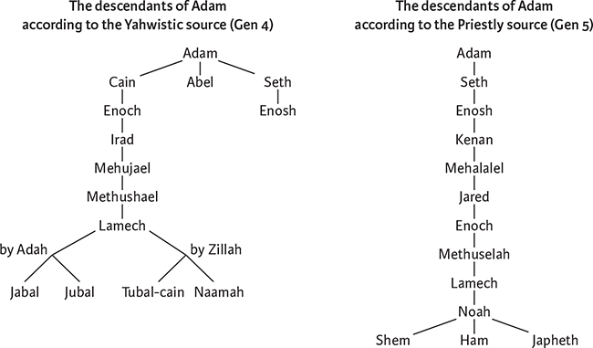
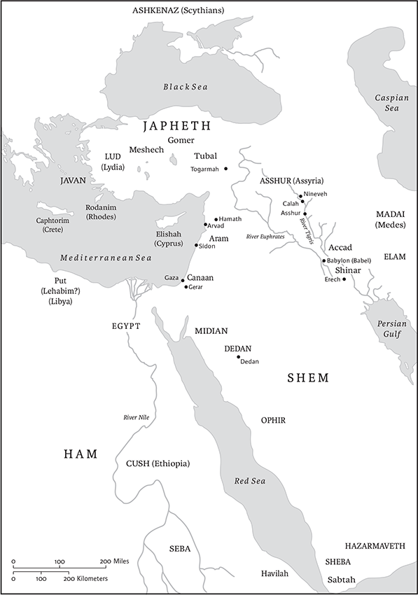
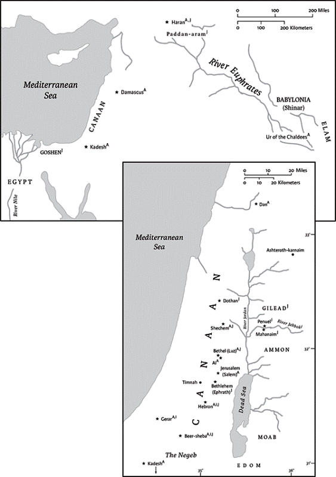
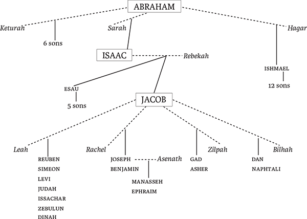

Genesis
Name
Jewish tradition calls the first book of the Bible after its first word, Bereshit, which can be translated as “in the beginning” or “when first.” It was common in the ancient world to name a book after its first word(s); for example, the Mesopotamian epic that narrates the world’s creation, Enuma Elish, gets its name from its first words, which mean “When on high.” Bereshit also highlights the character of the book as the beginning of the Bible.
Christian tradition takes its name for the first book of the Bible, “Genesis,” from the ancient Greek translation of the Torah, the Septuagint. Genesis in Greek means “origin” or “birth,” and it appears throughout the Greek translation of book, starting with two labels that refer to a “book of origin/birth” (2.4; 5.1). This name highlights an important dimension of the book of Genesis: its focus on genealogical origins. Though Genesis contains some of the most powerful narratives in the Bible, these stories occur within a genealogical structure, starting with 2.4 and ending with 37.2. Within this framework, the book may be understood as an expanded genealogy of the “children of Israel” who will be the focus of attention in the book of Exodus and subsequent books.
Canonical Status and Location
Every ordering of the Bible places Genesis first, and as such it sets the stage for what follows. Jews have long revered Genesis as the first book in the Torah, the most authoritative part of the Hebrew Bible. Christians have paid particular attention to Genesis because of its focus on God’s work with humanity prior to the giving of the law. When Islam arose, it too featured a prominent focus on traditions from Genesis, such as the stories of Adam and Eve, Abraham, Ishmael, and Isaac, and Joseph. As a result, three major religious traditions—Judaism, Christianity, and Islam—all lay claim to the characters and stories of Genesis, each with their distinct understanding of the meaning of this important book of beginnings.
Authorship
In the ancient Near East, most literary compositions, including Genesis, were anonymous. Only during the Greco‐Roman period do we start to see statements in early Jewish texts that Moses wrote Genesis and the rest of the Pentateuch. By this time Judaism had been influenced by Greek culture, where author attributions were important and the writings attributed to Homer enjoyed the highest prestige. In response, the Jewish authors of texts such as Jubilees (second century bce) claimed that their Pentateuch had an ancient author as well— Moses. This identification of authorship made some sense since the four books of the Pentateuch that follow Genesis all are set during the lifetime of Moses, and Moses is by far the most prominent human character in the Pentateuch. In addition, verses such as Deut 4.44, “This is the law [Heb torah] that Moses set before the Israelites,” were understood by later tradition as attributing the authorship of the entire Torah/Pentateuch to Moses.
Nevertheless, careful readers of the Bible in subsequent centuries recognized problems with this claim of authorship by Moses. Some verses in Genesis refer to events after the time of Moses, such as when the Canaanites were no longer in the land (12.6). In addition, a few rabbis wondered how Moses would have written a narrative about his own death and burial (Deut 34). To be sure, interpreters who have made it an article of faith to affirm Moses’s authorship of the entire Pentateuch have found ways to explain these and other problems. These discussions, however, highlight ways that Genesis and other books of the Pentateuch do not seem to have been written originally in the voice of Moses. Like other ancient texts, it was originally anonymous and only attributed to Moses in the context of later, author‐oriented cultures.
Dates of Composition, Historical Contexts, and Literary History
Two hundred and fifty years of historical scholarship on Genesis have established that Genesis was written over many centuries, using oral and written traditions. “In the beginning,” so to speak, were oral traditions, since Genesis was composed in a largely oral culture. We can see marks of that oral culture in the way similar stories about wife endangerment, wells, and oaths were attached to different patriarchs; compare, for example, stories about Abraham in Philistia in 20.1–18 and 21.22–34 with stories about Isaac in the same location in 26.6–33. Indeed, these sorts of oral traditions about beginnings were important at every stage in the composition of Genesis.
Most scholars agree that the texts now found in Genesis began to be written down sometime after the establishment of the monarchy in Israel in the tenth century bce or later. Building on German scholarship from the nineteenth century, many scholars think they can find (fragments of) two early sources in Genesis, a tenthcentury bce Yahwistic source (“J” for German “Jahwist”) written in Judah during the reign of David or Solomon, and an Elohistic source (“E”) written in the Northern Kingdom of Israel sometime during the eighth century bce. Much recent scholarship, however, has doubted the existence of such sources and preferred to see the earliest written origins of Genesis in separate compositions, such as a Yahwistic primeval history covering the creation and flood, an originally Northern Israelite narrative about Jacob and Joseph, and a separate Moses story. In either case, the earliest works now embedded in Genesis were products of scribes working in the context of the monarchies of early Judah and Israel.
Many important parts of Genesis, however, were not written until after the monarchy had fallen in 586 bce and Judean leaders were living in exile in Babylon. According to many scholars, this is the time when the Abraham narrative was written, and the theme of the promise of the land and much progeny was added to earlier stories about Jacob and Joseph. Through such new compositions and additions, former royal scribes adapted earlier writings about creation and ancestors to reassure the exiles of God’s intent to bless them as God earlier had blessed their ancestors. Moreover, they used this theme of promise to link earlier separate stories to each other and to the Moses story that followed. Alongside these scribal adaptations, a group of priestly authors wrote a parallel version of many stories in Genesis, starting with the seven‐day creation account in 1.1–2.3 and the genealogy in ch 5, continuing with a priestly version of the flood story, and moving on from God’s covenant of circumcision with Abraham (ch 17) to short stories about the inheritance of this covenant promise by his descendants. This layer of texts in Genesis is called “P” for “Priestly source,” because of its strong links to other Pentateuchal texts in Exodus–Numbers that focus on the priesthood of Aaron and sacrificial worship at the tabernacle. For example, in structure and vocabulary, the seven‐day creation account in 1.1–2.3 anticipates the story of the creation of the Priestly tabernacle at the end of the book of Exodus (Ex 35–40).
The last major stage in the composition of Genesis was the combination of the older non‐Priestly writings about creation–flood and ancestors with their priestly counterparts. This probably happened during the postexilic period, when exiles had returned and were rebuilding Jerusalem and its Temple. The consolidation of parallel traditions now in Genesis (and the rest of the Pentateuch) resulted in a common Torah around which the community could unite. This consolidation, however, also produced contradictions in Genesis that can be seen by the attentive reader, such as between the seven‐day creation in 1.1–2.3 (P) and the earlier non‐Priestly story of creation and aftermath in 2.4–3.24, or between a non‐Priestly version of the flood culminating in Noah’s sacrifice (e.g., 7.1–5 and 8.20–22) and a Priestly version of the flood that lacks such a sacrifice and does not describe the provision of extra animals for it (e.g., 6.11–22 and 9.1–17). The contrasts are so clear that historical scholars already started to distinguish between the Priestly layer and the other parts of Genesis more than three hundred years ago, and the specifics of this distinction of P and non‐P throughout the Pentateuch have remained an assured result of historical scholarship.
In sum, we do not know many of the details of the earliest composition of Genesis, and the oral stories that stand behind the book are lost. Nevertheless, we do know that the book was written over centuries by multiple authors, and we have a more specific and assured picture of the final stages of its composition. The book’s history of composition explains why Genesis is not limited to just one situation or set of perspectives. Instead, it is a chorus of different voices, a distillate of ancient Israel’s experiences with God over the centuries, written in the form of continually adapted stories about beginnings.
Structure and Contents
Genesis is comprised of two main sections: the primeval history in chs 1:1–11:26 and the ancestral history in chs 11:27–50:26. The latter section contains the story of Abraham and Sarah (chs 11.27–25.11), the story of Jacob and Esau (chs 25.19–35.29), and the story of Joseph and his brothers (chs 37.2–50.26). (Isaac, son of Abraham and father of Isaac, is a linking figure and is not the subject of an extensive story of his own.) Notably, despite the male focus of headings like this and in the book itself, it is matriarchs of ancient Israel, Sarah, Rebekah, Rachel, and Leah, who often play a determinative role in the Genesis narratives of birth and the fulfillment of God’s promise. The primeval history has two major sections that parallel each other: (1) the creation of the cosmos and stories of the first humans (1.1–6.4); and (2) the flood and dispersal of post‐flood humanity (6.5–11.9). It features universal traditions similar to myths in other cultures, particularly in the ancient Near East and Greece. For example, the Mesopotamian Atrahasis epic was written hundreds of years before chs 1–11, yet it parallels numerous particulars of the biblical narrative as it describes the creation of the world, a flood, and the vow of the gods (here plural) not to destroy life with a flood again. These two sections are followed by a genealogy in 11.10–26 that traces the generations connecting Noah’s son, Shem, to Abraham.
The ancestral history picks up where the primeval history left off and tells the story of God’s choice of Abraham and the transmission of the promise (12.1–3) through Isaac and Jacob (whose name is changed to Israel in 32.28; 35.10), down to Jacob’s twelve sons, the progenitors of the twelve tribes of Israel. These stories are closest to oral folklore, so it is often difficult to find ancient written parallels to chs 12–50. Nevertheless, recent scholarship has found similarities between Israelite tales about the matriarchs and patriarchs and modern legends told in oral cultures. For example, the depiction of the clever deceptions of Jacob and others (e.g., 25.27–34; 27.1–45) often parallel the celebration of wily “tricksters” in Native American and other traditions.
These different parts of Genesis are brought together through the framework of toledot (“generations” or “descendants”) headings (originally from the Priestly source), each of which guides the reader to the major focus of the section that follows it (2.4; 5.1; 6.9; 10.1; 11.10; 11.27; 25.12; 25.19; 36.1,9; 37.2). After an initial focus on all the peoples of the world descending from Adam (5.1) and Noah (6.9; 10.1), they highlight a narrowing focus in Genesis on those who receive the divine promise. The headings then lead us to Abraham, the first to receive God’s promise (11.10,27). Then they distinguish between descendants of Abraham who receive the promise (Isaac and Jacob/Israel) and those who do not (Ishmael and Esau).
Using these kinds of guides, we can outline Genesis as follows:
| I. | The primeval history | 1.1–11.26 |
| A. Creation and violence before the flood | 1.1–6.4 | |
| B. Re‐creation through flood and multiplication of humanity | 6.5–11.9 | |
| II. | Transitional genealogy bridging from Shem (the Primeval History) to Abraham (Ancestral History) | 11.10–26 |
| III. | The ancestral history | 11.27–50.26 |
| A. Gift of the divine promise to Abraham and his descendants | 11.27–25.11 | |
| B. The divergent destinies of the descendants of Ishmael and Isaac (Jacob/Esau) | 25.12–35.29 | |
| C. The divergent destinies of the descendants of Esau and Jacob/Israel | 36.1–50.26 |
By the end of the book, the lens of the narrative camera has moved from a wide‐angle overview of all the peoples of the world to a narrow focus on one small group, the sons of Jacob (also named “Israel”). As the book concludes, this family has settled in Egypt because of famine in their homeland, but the final set of sons of Jacob have remained together (in contrast to Isaac‐Ishmael and Jacob‐Esau) and are common heirs of the promise of their fathers, Abraham, Isaac, and Jacob. This family of promise will become the people of promise featured at the outset of the book of Exodus.
Interpretation
The history of interpretation of Genesis begins with its gradual composition over centuries. Early monarchic scribes reinterpreted oral traditions in writing the first preexilic compositions behind Genesis. Later exilic scribes expanded and joined together earlier compositions in the process of addressing an audience of Judeans exiled in Babylon. Priests (exilic or postexilic) wrote their own versions of the beginnings of Israel, “P.” Later postexilic writers consolidated the non‐Priestly and Priestly writings into a common Torah that became the foundation for later Judaism. Each of these stages involved interpretation of how earlier writings pertained to the present. Genesis as we have it now is a crystallization of these multiple interpretations.
As discussed, the book has continued to be centrally important to Jews, Christians, and Muslims. It was a major focus of early Jewish writings from the fifth century bce to the first century ce, including the books of Chronicles, Ezra, Ben Sira, and the Wisdom of Solomon. Later Jewish rabbinic scholars built on these traditions, writing midrashic interpretations of Genesis and expansive Aramaic translations of the book. Some of these Jewish traditions adapted the stories of Genesis so that they linked better with Torah law. For example, the book of Jubilees (written in the second century bce) uses regulations for impurity after birth (Lev 12.1–5) to calculate a period of forty days of impurity for Adam’s creation and an additional eighty days for Eve’s creation (Jubilees 3:8–12). Moreover, the story of Abraham’s near‐sacrifice of Isaac (22.1–19), termed the “Akedah” (the “binding”) in Jewish tradition, was adapted by some readers into an account of how Isaac actually was sacrificed by Abraham and resurrected by God—reflecting hopes for redemption in times of suffering.
Christian communities likewise focused on the stories of Genesis. For example, Paul, the central figure behind the outreach of Christians to Gentiles, argued that Abraham was an important example of how grace, through faith, came before the giving of the law. In his letter to the Romans (4.1–15) he notes that Abraham had his faith “reckoned to him as righteousness” (Gen 15.6) before he had undergone circumcision (Gen 17). Based on this and other arguments, Paul argued that Gentile converts did not have to fulfill Torah requirements such as circumcision in order to partake of God’s promise, as long as they joined themselves to Jesus Christ, whom Paul affirmed as the true spiritual offspring and heir of Abraham. Thus, whereas earlier and later Jewish interpreters tended to stress Abraham’s and other patriarchs’ Torah obedience, Paul, himself also a Jew, reinterpreted Abraham apart from Torah obedience in order to create a place for non‐Jews to have a full relationship with the God of Israel.
Stories originating from Genesis also play a prominent role in Islam. Building on older Jewish traditions about Abraham destroying his father’s idols, the Qur’an and other Muslim traditions revere Abraham as one of the first monotheists. Yet within Islam, Ishmael and not Isaac is the most important of his sons. It is Ishmael and not Isaac whom Abraham almost sacrifices (cf. Gen 22) according to Islamic tradition. Moreover, after that, Islamic tradition holds that Abraham and Ishmael went on to find and rebuild the Kaaba shrine at Mecca, Islam’s most holy site. In this way, stories from Genesis are linked to two of the five central pillars of Islam: monotheism and pilgrimage.
In the modern era, Genesis has been an important battleground as communities have worked to live out ancient faiths in a modern world. For example, much discussion of Genesis, at least among Christians in the West, has focused on whether the stories of Genesis are historically true. Astronomers, biologists, and other scientists have offered accounts of the origins of the cosmos and humanity different from those in Gen 1–2. Some believers, however, insist on the importance of affirming the historical accuracy of every part of Genesis as literal truth, and have come to see such belief as a defining characteristic of what it means to be truly faithful. This definition is relatively new: the historicity of Genesis was not a significant concern prior to the rise of modern science and the historical method; in fact, in premodern times, the stories of Genesis were often read metaphorically or allegorically. Moreover, many would argue that an ancient document such as Genesis should not be treated as scientific treatise or a modern‐style historical source. Instead, its rich store of narratives offer nonscientific, narrative, and poetic perspectives on values and the meaning of the cosmos that pertain to other dimensions of human life.
Finally, recent years have seen a proliferation of other approaches to Genesis, particularly literary studies of Genesis in its final form, without recourse to its compositional history, and feminist rereadings of many narratives in Genesis. For example, some feminist scholars have questioned whether the typical reading of the Garden of Eden story, which is highly critical of women, is correct. Others have highlighted the crucial role of the matriarchs as actors in the Genesis drama, especially as determiners of which son of a given patriarch will inherit the promise (e.g., Sarah and Rebekah) or as influencers of the levels of privilege among brothers (e.g., Rachel). Reading from another perspective, African American and other interpreters have traced the misuse of the story of Ham to reinforce racism and slavery, and a wide variety of interpreters have called into question the traditional interpretation of the story of Sodom and Gomorrah as a judgment on homosexuality. In these ways and many others, an ever more diverse range of interpreters of the Bible have offered new perspectives on a text centrally important to readers for many centuries.
Many who have resolved to read the whole Bible have made it through Genesis, but what they find often surprises them. Those who know the stories of Genesis through the lens of later interpretation often assume that the characters in the book are saints. A closer reading reveals otherwise. The supposedly “faithful” Abraham often seems doubtful of God’s intent to protect and provide for him, and Jacob and his family are distinguished by their ability to survive in the world through bargaining and trickery. Such stories pose a challenge to those who would use the biblical ancestors as role models for ethical behavior. Standing at the Bible’s outset, they challenge readers to develop other models for understanding and appreciating this ancient text.
Genesis has been a major focus for literary approaches to the Bible, which adopt techniques from the study of contemporary literature to illuminate the artistry and poetics of the Bible. The story of Joseph and his brothers is a particularly constructive place to explore this kind of approach. Its narrator subtly leads the reader through an arc extending from Joseph’s initial dreams of rule of his brothers in ch 37 to their submission to him and his provision of food for them in chs 42–50. Along the way, the speeches of Joseph and his brothers often do not correspond precisely to the reality described by the narrator, and the divergences reveal much about their characters. For example, the brothers’ failure to report that their money was back in their sacks (42.25–34) is found out by Jacob, who guesses that they were planning to take Benjamin from him (42.35–38) as they actually took Joseph (37.18–28). Later, Joseph puts his brothers in a position where they can save themselves from slavery by betraying Benjamin, Joseph’s full brother, as they once betrayed Joseph himself (44.1–17). Only when Judah, who formerly initiated the sale of Joseph into slavery (37.26–28), offers himself in place of Benjamin (44.18–34) does Joseph break down and reveal his true identity to his brothers (45.1–15). In this way the Joseph story artfully describes the first movement in Genesis from the urge toward fratricide (cf. 4.1–16; 27.41–45; see 33.12–17n.) to full reunion. Reading the Joseph story for such turns and characterizations can be an excellent introduction to the elegance of biblical narrative more generally.
Finally, one strategy in reading Genesis is to observe the differences between some of the writings embedded in it. The reader can compare parallel stories in Genesis, such as the different stories of creation in 1.1–2.3 and 2.4–3.24 or the parallel and yet different accounts about Hagar (chs 16 and 21), the covenant with Abraham (chs 15 and 17), or Sarah’s endangerment at the hands of her husband and foreign rulers (12.10–20 and 20.1–18), or Abraham, Abimelech, and Isaac (20.1–18; 21.22–34 and 26.6–33). Comparing these different accounts helps uncover the distinct perspectives of each and their contribution to the book of Genesis as a whole.
David M. Carr
1 In the beginning when God createda the heavens and the earth, 2the earth was a formless void and darkness covered the face of the deep, while a wind from Godb swept over the face of the waters. 3Then God said, “Let there be light”; and there was light. 4And God saw that the light was good; and God separated the light from the darkness. 5God called the light Day, and the darkness he called Night. And there was evening and there was morning, the first day.
6And God said, “Let there be a dome in the midst of the waters, and let it separate the waters from the waters.” 7So God made the dome and separated the waters that were under the dome from the waters that were above the dome. And it was so. 8God called the dome Sky. And there was evening and there was morning, the second day.
9And God said, “Let the waters under the sky be gathered together into one place, and let the dry land appear.” And it was so. 10God called the dry land Earth, and the waters that were gathered together he called Seas. And God saw that it was good. 11Then God said, “Let the earth put forth vegetation: plants yielding seed, and fruit trees of every kind on earth that bear fruit with the seed in it.” And it was so. 12The earth brought forth vegetation: plants yielding seed of every kind, and trees of every kind bearing fruit with the seed in it. And God saw that it was good. 13And there was evening and there was morning, the third day.
14And God said, “Let there be lights in the dome of the sky to separate the day from the night; and let them be for signs and for seasons and for days and years, 15and let them be lights in the dome of the sky to give light upon the earth.” And it was so. 16God made the two great lights—the greater light to rule the day and the lesser light to rule the night—and the stars. 17God set them in the dome of the sky to give light upon the earth, 18to rule over the day and over the night, and to separate the light from the darkness. And God saw that it was good. 19And there was evening and there was morning, the fourth day.
20And God said, “Let the waters bring forth swarms of living creatures, and let birds fly above the earth across the dome of the sky.” 21So God created the great sea monsters and every living creature that moves, of every kind, with which the waters swarm, and every winged bird of every kind. And God saw that it was good. 22God blessed them, saying, “Be fruitful and multiply and fill the waters in the seas, and let birds multiply on the earth.” 23And there was evening and there was morning, the fifth day.
24And God said, “Let the earth bring forth living creatures of every kind: cattle and creeping things and wild animals of the earth of every kind.” And it was so. 25God made the wild animals of the earth of every kind, and the cattle of every kind, and everything that creeps upon the ground of every kind. And God saw that it was good.
26Then God said, “Let us make humankinda in our image, according to our likeness; and let them have dominion over the fish of the sea, and over the birds of the air, and over the cattle, and over all the wild animals of the earth,a and over every creeping thing that creeps upon the earth.”
27So God created humankindb in his image, in the image of God he created them;c male and female he created them.
28God blessed them, and God said to them, “Be fruitful and multiply, and fill the earth and subdue it; and have dominion over the fish of the sea and over the birds of the air and over every living thing that moves upon the earth.” 29God said, “See, I have given you every plant yielding seed that is upon the face of all the earth, and every tree with seed in its fruit; you shall have them for food. 30And to every beast of the earth, and to every bird of the air, and to everything that creeps on the earth, everything that has the breath of life, I have given every green plant for food.” And it was so. 31God saw everything that he had made, and indeed, it was very good. And there was evening and there was morning, the sixth day.
2 Thus the heavens and the earth were finished, and all their multitude. 2And on the seventh day God finished the work that he had done, and he rested on the seventh day from all the work that he had done. 3So God blessed the seventh day and hallowed it, because on it God rested from all the work that he had done in creation.
4These are the generations of the heavens and the earth when they were created.
In the day that the Lordd God made the earth and the heavens, 5when no plant of the field was yet in the earth and no herb of the field had yet sprung up—for the Lord God had not caused it to rain upon the earth, and there was no one to till the ground; 6but a stream would rise from the earth, and water the whole face of the ground— 7then the Lord God formed man from the dust of the ground,a and breathed into his nostrils the breath of life; and the man became a living being. 8And the Lord God planted a garden in Eden, in the east; and there he put the man whom he had formed. 9Out of the ground the Lord God made to grow every tree that is pleasant to the sight and good for food, the tree of life also in the midst of the garden, and the tree of the knowledge of good and evil.
10A river flows out of Eden to water the garden, and from there it divides and becomes four branches. 11The name of the first is Pishon; it is the one that flows around the whole land of Havilah, where there is gold; 12and the gold of that land is good; bdellium and onyx stone are there. 13The name of the second river is Gihon; it is the one that flows around the whole land of Cush. 14The name of the third river is Tigris, which flows east of Assyria. And the fourth river is the Euphrates.
15The Lord God took the man and put him in the garden of Eden to till it and keep it. 16And the Lord God commanded the man, “You may freely eat of every tree of the garden; 17but of the tree of the knowledge of good and evil you shall not eat, for in the day that you eat of it you shall die.”
18Then the Lord God said, “It is not good that the man should be alone; I will make him a helper as his partner.” 19So out of the ground the Lord God formed every animal of the field and every bird of the air, and brought them to the man to see what he would call them; and whatever the man called every living creature, that was its name. 20The man gave names to all cattle, and to the birds of the air, and to every animal of the field; but for the manb there was not found a helper as his partner. 21So the Lord God caused a deep sleep to fall upon the man, and he slept; then he took one of his ribs and closed up its place with flesh. 22And the rib that the Lord God had taken from the man he made into a woman and brought her to the man. 23Then the man said,
24Therefore a man leaves his father and his mother and clings to his wife, and they become one flesh. 25And the man and his wife were both naked, and were not ashamed.
3 Now the serpent was more crafty than any other wild animal that the Lord God had made. He said to the woman, “Did God say, ‘You shall not eat from any tree in the garden’?” 2The woman said to the serpent, “We may eat of the fruit of the trees in the garden; 3but God said, ‘You shall not eat of the fruit of the tree that is in the middle of the garden, nor shall you touch it, or you shall die.’” 4But the serpent said to the woman, “You will not die; 5for God knows that when you eat of it your eyes will be opened, and you will be like God,c knowing good and evil.” 6So when the woman saw that the tree was good for food, and that it was a delight to the eyes, and that the tree was to be desired to make one wise, she took of its fruit and ate; and she also gave some to her husband, who was with her, and he ate. 7Then the eyes of both were opened, and they knew that they were naked; and they sewed fig leaves together and made loincloths for themselves.
8They heard the sound of the Lord God walking in the garden at the time of the evening breeze, and the man and his wife hid themselves from the presence of the Lord God among the trees of the garden. 9But the Lord God called to the man, and said to him, “Where are you?” 10He said, “I heard the sound of you in the garden, and I was afraid, because I was naked; and I hid myself.” 11He said, “Who told you that you were naked? Have you eaten from the tree of which I commanded you not to eat?” 12The man said, “The woman whom you gave to be with me, she gave me fruit from the tree, and I ate.” 13Then the Lord God said to the woman, “What is this that you have done?” The woman said, “The serpent tricked me, and I ate.” 14The Lord God said to the serpent,

“Because you have done this,
cursed are you among all animals
and among all wild creatures;
upon your belly you shall go,
and dust you shall eat
all the days of your life.
15I will put enmity between you and the woman,
and between your offspring and hers;
he will strike your head,
and you will strike his heel.”
16To the woman he said,
“I will greatly increase your pangs in childbearing;
in pain you shall bring forth children,
yet your desire shall be for your husband,
and he shall rule over you.”
“Because you have listened to the voice of your wife,
and have eaten of the tree
about which I commanded you,
‘You shall not eat of it,’
cursed is the ground because of you;
in toil you shall eat of it all the days of your life;
18thorns and thistles it shall bring forth for you;
and you shall eat the plants of the field.
19By the sweat of your face
you shall eat bread
until you return to the ground,
for out of it you were taken;
you are dust,
and to dust you shall return.”
20The man named his wife Eve,a because she was the mother of all living. 21And the Lord God made garments of skins for the manb and for his wife, and clothed them.
22Then the Lord God said, “See, the man has become like one of us, knowing good and evil; and now, he might reach out his hand and take also from the tree of life, and eat, and live forever”— 23therefore the Lord God sent him forth from the garden of Eden, to till the ground from which he was taken. 24He drove out the man; and at the east of the garden of Eden he placed the cherubim, and a sword flaming and turning to guard the way to the tree of life.
4 Now the man knew his wife Eve, and she conceived and bore Cain, saying, “I have producedc a man with the help of the Lord.” 2Next she bore his brother Abel. Now Abel was a keeper of sheep, and Cain a tiller of the ground. 3In the course of time Cain brought to the Lord an offering of the fruit of the ground, 4and Abel for his part brought of the firstlings of his flock, their fat portions. And the Lord had regard for Abel and his offering, 5but for Cain and his offering he had no regard. So Cain was very angry, and his countenance fell. 6The Lord said to Cain, “Why are you angry, and why has your countenance fallen? 7If you do well, will you not be accepted? And if you do not do well, sin is lurking at the door; its desire is for you, but you must master it.”
8Cain said to his brother Abel, “Let us go out to the field.”d And when they were in the field, Cain rose up against his brother Abel, and killed him. 9Then the Lord said to Cain, “Where is your brother Abel?” He said, “I do not know; am I my brother’s keeper?” 10And the Lord said, “What have you done? Listen; your brother’s blood is crying out to me from the ground! 11And now you are cursed from the ground, which has opened its mouth to receive your brother’s blood from your hand. 12When you till the ground, it will no longer yield to you its strength; you will be a fugitive and a wanderer on the earth.” 13Cain said to the Lord, “My punishment is greater than I can bear! 14Today you have driven me away from the soil, and I shall be hidden from your face; I shall be a fugitive and a wanderer on the earth, and anyone who meets me may kill me.” 15Then the Lord said to him, “Not so!a Whoever kills Cain will suffer a sevenfold vengeance.” And the Lord put a mark on Cain, so that no one who came upon him would kill him. 16Then Cain went away from the presence of the Lord, and settled in the land of Nod,b east of Eden.
17Cain knew his wife, and she conceived and bore Enoch; and he built a city, and named it Enoch after his son Enoch. 18To Enoch was born Irad; and Irad was the father of Mehujael, and Mehujael the father of Methushael, and Methushael the father of Lamech. 19Lamech took two wives; the name of the one was Adah, and the name of the other Zillah. 20Adah bore Jabal; he was the ancestor of those who live in tents and have livestock. 21His brother’s name was Jubal; he was the ancestor of all those who play the lyre and pipe. 22Zillah bore Tubal‐cain, who made all kinds of bronze and iron tools. The sister of Tubal‐cain was Naamah.
23Lamech said to his wives:
“Adah and Zillah, hear my voice;
you wives of Lamech, listen to what I say:
I have killed a man for wounding me,
a young man for striking me.
24If Cain is avenged sevenfold,
truly Lamech seventy‐sevenfold.”
25Adam knew his wife again, and she bore a son and named him Seth, for she said, “God has appointedc for me another child instead of Abel, because Cain killed him.” 26To Seth also a son was born, and he named him Enosh. At that time people began to invoke the name of the Lord.
5 This is the list of the descendants of Adam. When God created humankind,d he made theme in the likeness of God. 2Male and female he created them, and he blessed them and named them “Humankind”d when they were created.
3When Adam had lived one hundred thirty years, he became the father of a son in his likeness, according to his image, and named him Seth. 4The days of Adam after he became the father of Seth were eight hundred years; and he had other sons and daughters. 5Thus all the days that Adam lived were nine hundred thirty years; and he died.
6When Seth had lived one hundred five years, he became the father of Enosh. 7Seth lived after the birth of Enosh eight hundred seven years, and had other sons and daughters. 8Thus all the days of Seth were nine hundred twelve years; and he died.
9When Enosh had lived ninety years, he became the father of Kenan. 10Enosh lived after the birth of Kenan eight hundred fifteen years, and had other sons and daughters. 11Thus all the days of Enosh were nine hundred five years; and he died.
12When Kenan had lived seventy years, he became the father of Mahalalel. 13Kenan lived after the birth of Mahalalel eight hundred and forty years, and had other sons and daughters. 14Thus all the days of Kenan were nine hundred and ten years; and he died.
15When Mahalalel had lived sixty‐five years, he became the father of Jared. 16Mahalalel lived after the birth of Jared eight hundred thirty years, and had other sons and daughters. 17Thus all the days of Mahalalel were eight hundred ninety‐five years; and he died.
18When Jared had lived one hundred sixty‐two years he became the father of Enoch. 19Jared lived after the birth of Enoch eight hundred years, and had other sons and daughters. 20Thus all the days of Jared were nine hundred sixty‐two years; and he died.
21When Enoch had lived sixty‐five years, he became the father of Methuselah. 22Enoch walked with God after the birth of Methuselah three hundred years, and had other sons and daughters. 23Thus all the days of Enoch were three hundred sixty‐five years. 24Enoch walked with God; then he was no more, because God took him.
25When Methuselah had lived one hundred eighty‐seven years, he became the father of Lamech. 26Methuselah lived after the birth of Lamech seven hundred eighty‐two years, and had other sons and daughters. 27Thus all the days of Methuselah were nine hundred sixty‐nine years; and he died.
28When Lamech had lived one hundred eighty‐two years, he became the father of a son; 29he named him Noah, saying, “Out of the ground that the Lord has cursed this one shall bring us relief from our work and from the toil of our hands.” 30Lamech lived after the birth of Noah five hundred ninety‐five years, and had other sons and daughters. 31Thus all the days of Lamech were seven hundred seventy‐seven years; and he died.
32After Noah was five hundred years old, Noah became the father of Shem, Ham, and Japheth.
6 When people began to multiply on the face of the ground, and daughters were born to them, 2the sons of God saw that they were fair; and they took wives for themselves of all that they chose. 3Then the Lord said, “My spirit shall not abidea in mortals forever, for they are flesh; their days shall be one hundred twenty years.” 4The Nephilim were on the earth in those days—and also afterward—when the sons of God went in to the daughters of humans, who bore children to them. These were the heroes that were of old, warriors of renown.
5The Lord saw that the wickedness of humankind was great in the earth, and that every inclination of the thoughts of their hearts was only evil continually. 6And the Lord was sorry that he had made humankind on the earth, and it grieved him to his heart. 7So the Lord said, “I will blot out from the earth the human beings I have created— people together with animals and creeping things and birds of the air, for I am sorry that I have made them.” 8But Noah found favor in the sight of the Lord.
9These are the descendants of Noah. Noah was a righteous man, blameless in his generation; Noah walked with God. 10And Noah had three sons, Shem, Ham, and Japheth.
11Now the earth was corrupt in God’s sight, and the earth was filled with violence. 12And God saw that the earth was corrupt; for all flesh had corrupted its ways upon the earth. 13And God said to Noah, “I have determined to make an end of all flesh, for the earth is filled with violence because of them; now I am going to destroy them along with the earth. 14Make yourself an ark of cypressa wood; make rooms in the ark, and cover it inside and out with pitch. 15This is how you are to make it: the length of the ark three hundred cubits, its width fifty cubits, and its height thirty cubits. 16Make a roof b for the ark, and finish it to a cubit above; and put the door of the ark in its side; make it with lower, second, and third decks. 17For my part, I am going to bring a flood of waters on the earth, to destroy from under heaven all flesh in which is the breath of life; everything that is on the earth shall die. 18But I will establish my covenant with you; and you shall come into the ark, you, your sons, your wife, and your sons’ wives with you. 19And of every living thing, of all flesh, you shall bring two of every kind into the ark, to keep them alive with you; they shall be male and female. 20Of the birds according to their kinds, and of the animals according to their kinds, of every creeping thing of the ground according to its kind, two of every kind shall come in to you, to keep them alive. 21Also take with you every kind of food that is eaten, and store it up; and it shall serve as food for you and for them.” 22Noah did this; he did all that God commanded him.
7 Then the Lord said to Noah, “Go into the ark, you and all your household, for I have seen that you alone are righteous before me in this generation. 2Take with you seven pairs of all clean animals, the male and its mate; and a pair of the animals that are not clean, the male and its mate; 3and seven pairs of the birds of the air also, male and female, to keep their kind alive on the face of all the earth. 4For in seven days I will send rain on the earth for forty days and forty nights; and every living thing that I have made I will blot out from the face of the ground.” 5And Noah did all that the Lord had commanded him.
6Noah was six hundred years old when the flood of waters came on the earth. 7And Noah with his sons and his wife and his sons’ wives went into the ark to escape the waters of the flood. 8Of clean animals, and of animals that are not clean, and of birds, and of everything that creeps on the ground, 9two and two, male and female, went into the ark with Noah, as God had commanded Noah. 10And after seven days the waters of the flood came on the earth.
11In the six hundredth year of Noah’s life, in the second month, on the seventeenth day of the month, on that day all the fountains of the great deep burst forth, and the windows of the heavens were opened. 12The rain fell on the earth forty days and forty nights. 13On the very same day Noah with his sons, Shem and Ham and Japheth, and Noah’s wife and the three wives of his sons entered the ark, 14they and every wild animal of every kind, and all domestic animals of every kind, and every creeping thing that creeps on the earth, and every bird of every kind—every bird, every winged creature. 15They went into the ark with Noah, two and two of all flesh in which there was the breath of life. 16And those that entered, male and female of all flesh, went in as God had commanded him; and the Lord shut him in.
17The flood continued forty days on the earth; and the waters increased, and bore up the ark, and it rose high above the earth. 18The waters swelled and increased greatly on the earth; and the ark floated on the face of the waters. 19The waters swelled so mightily on the earth that all the high mountains under the whole heaven were covered; 20the waters swelled above the mountains, covering them fifteen cubits deep. 21And all flesh died that moved on the earth, birds, domestic animals, wild animals, all swarming creatures that swarm on the earth, and all human beings; 22everything on dry land in whose nostrils was the breath of life died. 23He blotted out every living thing that was on the face of the ground, human beings and animals and creeping things and birds of the air; they were blotted out from the earth. Only Noah was left, and those that were with him in the ark. 24And the waters swelled on the earth for one hundred fifty days.
8 But God remembered Noah and all the wild animals and all the domestic animals that were with him in the ark. And God made a wind blow over the earth, and the waters subsided; 2the fountains of the deep and the windows of the heavens were closed, the rain from the heavens was restrained, 3and the waters gradually receded from the earth. At the end of one hundred fifty days the waters had abated; 4and in the seventh month, on the seventeenth day of the month, the ark came to rest on the mountains of Ararat. 5The waters continued to abate until the tenth month; in the tenth month, on the first day of the month, the tops of the mountains appeared.
6At the end of forty days Noah opened the window of the ark that he had made 7and sent out the raven; and it went to and fro until the waters were dried up from the earth. 8Then he sent out the dove from him, to see if the waters had subsided from the face of the ground; 9but the dove found no place to set its foot, and it returned to him to the ark, for the waters were still on the face of the whole earth. So he put out his hand and took it and brought it into the ark with him. 10He waited another seven days, and again he sent out the dove from the ark; 11and the dove came back to him in the evening, and there in its beak was a freshly plucked olive leaf; so Noah knew that the waters had subsided from the earth. 12Then he waited another seven days, and sent out the dove; and it did not return to him any more.
13In the six hundred first year, in the first month, on the first day of the month, the waters were dried up from the earth; and Noah removed the covering of the ark, and looked, and saw that the face of the ground was drying. 14In the second month, on the twenty‐seventh day of the month, the earth was dry. 15Then God said to Noah, 16“Go out of the ark, you and your wife, and your sons and your sons’ wives with you. 17Bring out with you every living thing that is with you of all flesh—birds and animals and every creeping thing that creeps on the earth—so that they may abound on the earth, and be fruitful and multiply on the earth.” 18So Noah went out with his sons and his wife and his sons’ wives. 19And every animal, every creeping thing, and every bird, everything that moves on the earth, went out of the ark by families.
20Then Noah built an altar to the Lord, and took of every clean animal and of every clean bird, and offered burnt offerings on the altar. 21And when the Lord smelled the pleasing odor, the Lord said in his heart, “I will never again curse the ground because of humankind, for the inclination of the human heart is evil from youth; nor will I ever again destroy every living creature as I have done.
22As long as the earth endures,
seedtime and harvest, cold and heat,
summer and winter, day and night,
shall not cease.”
9 God blessed Noah and his sons, and said to them, “Be fruitful and multiply, and fill the earth. 2The fear and dread of you shall rest on every animal of the earth, and on every bird of the air, on everything that creeps on the ground, and on all the fish of the sea; into your hand they are delivered. 3Every moving thing that lives shall be food for you; and just as I gave you the green plants, I give you everything. 4Only, you shall not eat flesh with its life, that is, its blood. 5For your own lifeblood I will surely require a reckoning: from every animal I will require it and from human beings, each one for the blood of another, I will require a reckoning for human life.
6Whoever sheds the blood of a human,
by a human shall that person’s blood be shed;
for in his own image
God made humankind.

Ch 10: The table of nations. Only places that can be identified with probability are shown.
7And you, be fruitful and multiply, abound on the earth and multiply in it.”
8Then God said to Noah and to his sons with him, 9“As for me, I am establishing my covenant with you and your descendants after you, 10and with every living creature that is with you, the birds, the domestic animals, and every animal of the earth with you, as many as came out of the ark.a 11I establish my covenant with you, that never again shall all flesh be cut off by the waters of a flood, and never again shall there be a flood to destroy the earth.” 12God said, “This is the sign of the covenant that I make between me and you and every living creature that is with you, for all future generations: 13I have set my bow in the clouds, and it shall be a sign of the covenant between me and the earth. 14When I bring clouds over the earth and the bow is seen in the clouds, 15I will remember my covenant that is between me and you and every living creature of all flesh; and the waters shall never again become a flood to destroy all flesh. 16When the bow is in the clouds, I will see it and remember the everlasting covenant between God and every living creature of all flesh that is on the earth.” 17God said to Noah, “This is the sign of the covenant that I have established between me and all flesh that is on the earth.”
18The sons of Noah who went out of the ark were Shem, Ham, and Japheth. Ham was the father of Canaan. 19These three were the sons of Noah; and from these the whole earth was peopled.
20Noah, a man of the soil, was the first to plant a vineyard. 21He drank some of the wine and became drunk, and he lay uncovered in his tent. 22And Ham, the father of Canaan, saw the nakedness of his father, and told his two brothers outside. 23Then Shem and Japheth took a garment, laid it on both their shoulders, and walked backward and covered the nakedness of their father; their faces were turned away, and they did not see their father’s nakedness. 24When Noah awoke from his wine and knew what his youngest son had done to him, 25he said,
28After the flood Noah lived three hundred fifty years. 29All the days of Noah were nine hundred fifty years; and he died.
10 These are the descendants of Noah’s sons, Shem, Ham, and Japheth; children were born to them after the flood.
2The descendants of Japheth: Gomer, Magog, Madai, Javan, Tubal, Meshech, and Tiras. 3The descendants of Gomer: Ashkenaz, Riphath, and Togarmah. 4The descendants of Javan: Elishah, Tarshish, Kittim, and Rodanim.b 5From these the coastland peoples spread. These are the descendants of Japhethc in their lands, with their own language, by their families, in their nations.
6The descendants of Ham: Cush, Egypt, Put, and Canaan. 7The descendants of Cush: Seba, Havilah, Sabtah, Raamah, and Sabteca. The descendants of Raamah: Sheba and Dedan. 8Cush became the father of Nimrod; he was the first on earth to become a mighty warrior. 9He was a mighty hunter before the Lord; therefore it is said, “Like Nimrod a mighty hunter before the Lord.” 10The beginning of his kingdom was Babel, Erech, and Accad, all of them in the land of Shinar. 11From that land he went into Assyria, and built Nineveh, Rehoboth‐ir, Calah, and 12Resen between Nineveh and Calah; that is the great city. 13Egypt became the father of Ludim, Anamim, Lehabim, Naphtuhim, 14Pathrusim, Casluhim, and Caphtorim, from which the Philistines come.d
15Canaan became the father of Sidon his firstborn, and Heth, 16and the Jebusites, the Amorites, the Girgashites, 17the Hivites, the Arkites, the Sinites, 18the Arvadites, the Zemarites, and the Hamathites. Afterward the families of the Canaanites spread abroad. 19And the territory of the Canaanites extended from Sidon, in the direction of Gerar, as far as Gaza, and in the direction of Sodom, Gomorrah, Admah, and Zeboiim, as far as Lasha. 20These are the descendants of Ham, by their families, their languages, their lands, and their nations.
21To Shem also, the father of all the children of Eber, the elder brother of Japheth, children were born. 22The descendants of Shem: Elam, Asshur, Arpachshad, Lud, and Aram. 23The descendants of Aram: Uz, Hul, Gether, and Mash. 24Arpachshad became the father of Shelah; and Shelah became the father of Eber. 25To Eber were born two sons: the name of the one was Peleg,e for in his days the earth was divided, and his brother’s name was Joktan. 26Joktan became the father of Almodad, Sheleph, Hazarmaveth, Jerah, 27Hadoram, Uzal, Diklah, 28Obal, Abimael, Sheba, 29Ophir, Havilah, and Jobab; all these were the descendants of Joktan. 30The territory in which they lived extended from Mesha in the direction of Sephar, the hill country of the east. 31These are the descendants of Shem, by their families, their languages, their lands, and their nations.
32These are the families of Noah’s sons, according to their genealogies, in their nations; and from these the nations spread abroad on the earth after the flood.
11 Now the whole earth had one language and the same words. 2And as they migrated from the east,a they came upon a plain in the land of Shinar and settled there. 3And they said to one another, “Come, let us make bricks, and burn them thoroughly.” And they had brick for stone, and bitumen for mortar. 4Then they said, “Come, let us build ourselves a city, and a tower with its top in the heavens, and let us make a name for ourselves; otherwise we shall be scattered abroad upon the face of the whole earth.” 5The Lord came down to see the city and the tower, which mortals had built. 6And the Lord said, “Look, they are one people, and they have all one language; and this is only the beginning of what they will do; nothing that they propose to do will now be impossible for them. 7Come, let us go down, and confuse their language there, so that they will not understand one another’s speech.” 8So the Lord scattered them abroad from there over the face of all the earth, and they left off building the city. 9Therefore it was called Babel, because there the Lord confusedb the language of all the earth; and from there the Lord scattered them abroad over the face of all the earth.
10These are the descendants of Shem. When Shem was one hundred years old, he became the father of Arpachshad two years after the flood; 11and Shem lived after the birth of Arpachshad five hundred years, and had other sons and daughters.
12When Arpachshad had lived thirty‐five years, he became the father of Shelah; 13and Arpachshad lived after the birth of Shelah four hundred three years, and had other sons and daughters.
14When Shelah had lived thirty years, he became the father of Eber; 15and Shelah lived after the birth of Eber four hundred three years, and had other sons and daughters.
16When Eber had lived thirty‐four years, he became the father of Peleg; 17and Eber lived after the birth of Peleg four hundred thirty years, and had other sons and daughters.
18When Peleg had lived thirty years, he became the father of Reu; 19and Peleg lived after the birth of Reu two hundred nine years, and had other sons and daughters.
20When Reu had lived thirty‐two years, he became the father of Serug; 21and Reu lived after the birth of Serug two hundred seven years, and had other sons and daughters.
22When Serug had lived thirty years, he became the father of Nahor; 23and Serug lived after the birth of Nahor two hundred years, and had other sons and daughters.
24When Nahor had lived twenty‐nine years, he became the father of Terah; 25and Nahor lived after the birth of Terah one hundred nineteen years, and had other sons and daughters.
26When Terah had lived seventy years, he became the father of Abram, Nahor, and Haran.
27Now these are the descendants of Terah. Terah was the father of Abram, Nahor, and Haran; and Haran was the father of Lot. 28Haran died before his father Terah in the land of his birth, in Ur of the Chaldeans. 29Abram and Nahor took wives; the name of Abram’s wife was Sarai, and the name of Nahor’s wife was Milcah. She was the daughter of Haran the father of Milcah and Iscah. 30Now Sarai was barren; she had no child.
31Terah took his son Abram and his grandson Lot son of Haran, and his daughter‐in‐law Sarai, his son Abram’s wife, and they went out together from Ur of the Chaldeans to go into the land of Canaan; but when they came to Haran, they settled there. 32The days of Terah were two hundred five years; and Terah died in Haran.
12 Now the Lord said to Abram, “Go from your country and your kindred and your father’s house to the land that I will show you. 2I will make of you a great nation, and I will bless you, and make your name great, so that you will be a blessing. 3I will bless those who bless you, and the one who curses you I will curse; and in you all the families of the earth shall be blessed.”a

Chs 12–50: The geography of the ancestral narratives. Places associated with a particular ancestor are highlighted with a star, and the initial of the ancestor follows the place name: A(braham), I(saac), or J(acob).
4So Abram went, as the Lord had told him; and Lot went with him. Abram was seventyfive years old when he departed from Haran. 5Abram took his wife Sarai and his brother’s son Lot, and all the possessions that they had gathered, and the persons whom they had acquired in Haran; and they set forth to go to the land of Canaan. When they had come to the l and of Canaan, 6Abram passed through the land to the place at Shechem, to the oakb of Moreh. At that time the Canaanites were in the land. 7Then the Lord appeared to Abram, and said, “To your offspringc I will give this land.” So he built there an altar to the Lord, who had appeared to him. 8From there he moved on to the hill country on the east of Bethel, and pitched his tent, with Bethel on the west and Ai on the east; and there he built an altar to the Lord and invoked the name of the Lord. 9And Abram journeyed on by stages toward the Negeb.
10Now there was a famine in the land. So Abram went down to Egypt to reside there as an alien, for the famine was severe in the land. 11When he was about to enter Egypt, he said to his wife Sarai, “I know well that you are a woman beautiful in appearance; 12and when the Egyptians see you, they will say, ‘This is his wife’; then they will kill me, but they will let you live. 13Say you are my sister, so that it may go well with me because of you, and that my life may be spared on your account.” 14When Abram entered Egypt the Egyptians saw that the woman was very beautiful. 15When the officials of Pharaoh saw her, they praised her to Pharaoh. And the woman was taken into Pharaoh’s house. 16And for her sake he dealt well with Abram; and he had sheep, oxen, male donkeys, male and female slaves, female donkeys, and camels.
17But the Lord afflicted Pharaoh and his house with great plagues because of Sarai, Abram’s wife. 18So Pharaoh called Abram, and said, “What is this you have done to me? Why did you not tell me that she was your wife? 19Why did you say, ‘She is my sister,’ so that I took her for my wife? Now then, here is your wife, take her, and be gone.” 20And Pharaoh gave his men orders concerning him; and they set him on the way, with his wife and all that he had.
13 So Abram went up from Egypt, he and his wife, and all that he had, and Lot with him, into the Negeb.
2Now Abram was very rich in livestock, in silver, and in gold. 3He journeyed on by stages from the Negeb as far as Bethel, to the place where his tent had been at the beginning, between Bethel and Ai, 4to the place where he had made an altar at the first; and there Abram called on the name of the Lord. 5Now Lot, who went with Abram, also had flocks and herds and tents, 6so that the land could not support both of them living together; for their possessions were so great that they could not live together, 7and there was strife between the herders of Abram’s livestock and the herders of Lot’s livestock. At that time the Canaanites and the Perizzites lived in the land.
8Then Abram said to Lot, “Let there be no strife between you and me, and between your herders and my herders; for we are kindred. 9Is not the whole land before you? Separate yourself from me. If you take the left hand, then I will go to the right; or if you take the right hand, then I will go to the left.” 10Lot looked about him, and saw that the plain of the Jordan was well watered everywhere like the garden of the Lord, like the land of Egypt, in the direction of Zoar; this was before the Lord had destroyed Sodom and Gomorrah. 11So Lot chose for himself all the plain of the Jordan, and Lot journeyed eastward; thus they separated from each other. 12Abram settled in the land of Canaan, while Lot settled among the cities of the Plain and moved his tent as far as Sodom. 13Now the people of Sodom were wicked, great sinners against the Lord.
14The Lord said to Abram, after Lot had separated from him, “Raise your eyes now, and look from the place where you are, northward and southward and eastward and westward; 15for all the land that you see I will give to you and to your offspringa forever. 16I will make your offspring like the dust of the earth; so that if one can count the dust of the earth, your offspring also can be counted. 17Rise up, walk through the length and the breadth of the land, for I will give it to you.” 18So Abram moved his tent, and came and settled by the oaksb of Mamre, which are at Hebron; and there he built an altar to the Lord.
14 In the days of King Amraphel of Shinar, King Arioch of Ellasar, King Chedorlaomer of Elam, and King Tidal of Goiim, 2these kings made war with King Bera of Sodom, King Birsha of Gomorrah, King Shinab of Admah, King Shemeber of Zeboiim, and the king of Bela (that is, Zoar). 3All these joined forces in the Valley of Siddim (that is, the Dead Sea).a 4Twelve years they had served Chedorlaomer, but in the thirteenth year they rebelled. 5In the fourteenth year Chedorlaomer and the kings who were with him came and subdued the Rephaim in Ashteroth‐karnaim, the Zuzim in Ham, the Emim in Shaveh‐kiriathaim, 6and the Horites in the hill country of Seir as far as El‐paran on the edge of the wilderness; 7then they turned back and came to En‐mishpat (that is, Kadesh), and subdued all the country of the Amalekites, and also the Amorites who lived in Hazazon‐tamar. 8Then the king of Sodom, the king of Gomorrah, the king of Admah, the king of Zeboiim, and the king of Bela (that is, Zoar) went out, and they joined battle in the Valley of Siddim 9with King Chedorlaomer of Elam, King Tidal of Goiim, King Amraphel of Shinar, and King Arioch of Ellasar, four kings against five. 10Now the Valley of Siddim was full of bitumen pits; and as the kings of Sodom and Gomorrah fled, some fell into them, and the rest fled to the hill country. 11So the enemy took all the goods of Sodom and Gomorrah, and all their provisions, and went their way; 12they also took Lot, the son of Abram’s brother, who lived in Sodom, and his goods, and departed.
13Then one who had escaped came and told Abram the Hebrew, who was living by the oaksb of Mamre the Amorite, brother of Eshcol and of Aner; these were allies of Abram. 14When Abram heard that his nephew had been taken captive, he led forth his trained men, born in his house, three hundred eighteen of them, and went in pursuit as far as Dan. 15He divided his forces against them by night, he and his servants, and routed them and pursued them to Hobah, north of Damascus. 16Then he brought back all the goods, and also brought back his nephew Lot with his goods, and the women and the people.
17After his return from the defeat of Chedorlaomer and the kings who were with him, the king of Sodom went out to meet him at the Valley of Shaveh (that is, the King’s Valley). 18And King Melchizedek of Salem brought out bread and wine; he was priest of God Most High.c 19He blessed him and said,
“Blessed be Abram by God Most High,c
maker of heaven and earth;
20and blessed be God Most High,c
who has delivered your enemies into your hand!”
And Abram gave him one‐tenth of everything. 21Then the king of Sodom said to Abram, “Give me the persons, but take the goods for yourself.” 22But Abram said to the king of Sodom, “I have sworn to the Lord, God Most High,c maker of heaven and earth, 23that I would not take a thread or a sandalthong or anything that is yours, so that you might not say, ‘I have made Abram rich.’ 24I will take nothing but what the young men have eaten, and the share of the men who went with me—Aner, Eshcol, and Mamre. Let them take their share.”
15 After these things the word of the Lord came to Abram in a vision, “Do not be afraid, Abram, I am your shield; your reward shall be very great.” 2But Abram said, “O Lord God, what will you give me, for I continue childless, and the heir of my house is Eliezer of Damascus?”a 3And Abram said, “You have given me no offspring, and so a slave born in my house is to be my heir.” 4But the word of the Lord came to him, “This man shall not be your heir; no one but your very own issue shall be your heir.” 5He brought him outside and said, “Look toward heaven and count the stars, if you are able to count them.” Then he said to him, “So shall your descendants be.” 6And he believed the Lord; and the Lordb reckoned it to him as righteousness.
7Then he said to him, “I am the Lord who brought you from Ur of the Chaldeans, to give you this land to possess.” 8But he said, “O Lord God, how am I to know that I shall possess it?” 9He said to him, “Bring me a heifer three years old, a female goat three years old, a ram three years old, a turtledove, and a young pigeon.” 10He brought him all these and cut them in two, laying each half over against the other; but he did not cut the birds in two. 11And when birds of prey came down on the carcasses, Abram drove them away.
12As the sun was going down, a deep sleep fell upon Abram, and a deep and terrifying darkness descended upon him. 13Then the Lordb said to Abram, “Know this for certain, that your offspring shall be aliens in a land that is not theirs, and shall be slaves there, and they shall be oppressed for four hundred years; 14but I will bring judgment on the nation that they serve, and afterward they shall come out with great possessions. 15As for yourself, you shall go to your ancestors in peace; you shall be buried in a good old age. 16And they shall come back here in the fourth generation; for the iniquity of the Amorites is not yet complete.”
17When the sun had gone down and it was dark, a smoking fire pot and a flaming torch passed between these pieces. 18On that day the Lord made a covenant with Abram, saying, “To your descendants I give this land, from the river of Egypt to the great river, the river Euphrates, 19the land of the Kenites, the Kenizzites, the Kadmonites, 20the Hittites, the Perizzites, the Rephaim, 21the Amorites, the Canaanites, the Girgashites, and the Jebusites.”
16 Now Sarai, Abram’s wife, bore him no children. She had an Egyptian slave‐girl whose name was Hagar, 2and Sarai said to Abram, “You see that the Lord has prevented me from bearing children; go in to my slave‐girl; it may be that I shall obtain children by her.” And Abram listened to the voice of Sarai. 3So, after Abram had lived ten years in the land of Canaan, Sarai, Abram’s wife, took Hagar the Egyptian, her slave‐girl, and gave her to her husband Abram as a wife. 4He went in to Hagar, and she conceived; and when she saw that she had conceived, she looked with contempt on her mistress. 5Then Sarai said to Abram, “May the wrong done to me be on you! I gave my slave‐girl to your embrace, and when she saw that she had conceived, she looked on me with contempt. May the Lord judge between you and me!” 6But Abram said to Sarai, “Your slave‐girl is in your power; do to her as you please.” Then Sarai dealt harshly with her, and she ran away from her.
7The angel of the Lord found her by a spring of water in the wilderness, the spring on the way to Shur. 8And he said, “Hagar, slave‐girl of Sarai, where have you come from and where are you going?” She said, “I am running away from my mistress Sarai.” 9The angel of the Lord said to her, “Return to your mistress, and submit to her.” 10The angel of the Lord also said to her, “I will so greatly multiply your offspring that they cannot be counted for multitude.” 11And the angel of the Lord said to her,
13So she named the Lord who spoke to her, “You are El‐roi”;b for she said, “Have I really seen God and remained alive after seeing him?”c 14Therefore the well was called Beerlahai‐roi;d it lies between Kadesh and Bered.
15Hagar bore Abram a son; and Abram named his son, whom Hagar bore, Ishmael. 16Abram was eighty‐six years old when Hagar bore hime Ishmael.
17 When Abram was ninety‐nine years old, the Lord appeared to Abram, and said to him, “I am God Almighty;f walk before me, and be blameless. 2And I will make my covenant between me and you, and will make you exceedingly numerous.” 3Then Abram fell on his face; and God said to him, 4“As for me, this is my covenant with you: You shall be the ancestor of a multitude of nations. 5No longer shall your name be Abram,g but your name shall be Abraham;h for I have made you the ancestor of a multitude of nations. 6I will make you exceedingly fruitful; and I will make nations of you, and kings shall come from you. 7I will establish my covenant between me and you, and your offspring after you throughout their generations, for an everlasting covenant, to be God to you and to your offspringi after you. 8And I will give to you, and to your offspring after you, the land where you are now an alien, all the land of Canaan, for a perpetual holding; and I will be their God.”
9God said to Abraham, “As for you, you shall keep my covenant, you and your offspring after you throughout their generations. 10This is my covenant, which you shall keep, between me and you and your offspring after you: Every male among you shall be circumcised. 11You shall circumcise the flesh of your foreskins, and it shall be a sign of the covenant between me and you. 12Throughout your generations every male among you shall be circumcised when he is eight days old, including the slave born in your house and the one bought with your money from any foreigner who is not of your offspring. 13Both the slave born in your house and the one bought with your money must be circumcised. So shall my covenant be in your flesh an everlasting covenant. 14Any uncircumcised male who is not circumcised in the flesh of his foreskin shall be cut off from his people; he has broken my covenant.”
15God said to Abraham, “As for Sarai your wife, you shall not call her Sarai, but Sarah shall be her name. 16I will bless her, and moreover I will give you a son by her. I will bless her, and she shall give rise to nations; kings of peoples shall come from her.” 17Then Abraham fell on his face and laughed, and said to himself, “Can a child be born to a man who is a hundred years old? Can Sarah, who is ninety years old, bear a child?” 18And Abraham said to God, “O that Ishmael might live in your sight!” 19God said, “No, but your wife Sarah shall bear you a son, and you shall name him Isaac.a I will establish my covenant with him as an everlasting covenant for his offspring after him. 20As for Ishmael, I have heard you; I will bless him and make him fruitful and exceedingly numerous; he shall be the father of twelve princes, and I will make him a great nation. 21But my covenant I will establish with Isaac, whom Sarah shall bear to you at this season next year.” 22And when he had finished talking with him, God went up from Abraham.
23Then Abraham took his son Ishmael and all the slaves born in his house or bought with his money, every male among the men of Abraham’s house, and he circumcised the flesh of their foreskins that very day, as God had said to him. 24Abraham was ninety‐nine years old when he was circumcised in the flesh of his foreskin. 25And his son Ishmael was thirteen years old when he was circumcised in the flesh of his foreskin. 26That very day Abraham and his son Ishmael were circumcised; 27and all the men of his house, slaves born in the house and those bought with money from a foreigner, were circumcised with him.
18 The Lord appeared to Abrahamb by the oaksc of Mamre, as he sat at the entrance of his tent in the heat of the day. 2He looked up and saw three men standing near him. When he saw them, he ran from the tent entrance to meet them, and bowed down to the ground. 3He said, “My lord, if I find favor with you, do not pass by your servant. 4Let a little water be brought, and wash your feet, and rest yourselves under the tree. 5Let me bring a little bread, that you may refresh yourselves, and after that you may pass on—since you have come to your servant.” So they said, “Do as you have said.” 6And Abraham hastened into the tent to Sarah, and said, “Make ready quickly three measuresd of choice flour, knead it, and make cakes.” 7Abraham ran to the herd, and took a calf, tender and good, and gave it to the servant, who hastened to prepare it. 8Then he took curds and milk and the calf that he had prepared, and set it before them; and he stood by them under the tree while they ate.
9They said to him, “Where is your wife Sarah?” And he said, “There, in the tent.” 10Then one said, “I will surely return to you in due season, and your wife Sarah shall have a son.” And Sarah was listening at the tent entrance behind him. 11Now Abraham and Sarah were old, advanced in age; it had ceased to be with Sarah after the manner of women. 12So Sarah laughed to herself, saying, “After I have grown old, and my husband is old, shall I have pleasure?” 13The Lord said to Abraham, “Why did Sarah laugh, and say, ‘Shall I indeed bear a child, now that I am old?’ 14Is anything too wonderful for the Lord? At the set time I will return to you, in due season, and Sarah shall have a son.” 15But Sarah denied, saying, “I did not laugh”; for she was afraid. He said, “Oh yes, you did laugh.”
16Then the men set out from there, and they looked toward Sodom; and Abraham went with them to set them on their way. 17The Lord said, “Shall I hide from Abraham what I am about to do, 18seeing that Abraham shall become a great and mighty nation, and all the nations of the earth shall be blessed in him?a 19No, for I have chosenb him, that he may charge his children and his household after him to keep the way of the Lord by doing righteousness and justice; so that the Lord may bring about for Abraham what he has promised him.” 20Then the Lord said, “How great is the outcry against Sodom and Gomorrah and how very grave their sin! 21I must go down and see whether they have done altogether according to the outcry that has come to me; and if not, I will know.”
22So the men turned from there, and went toward Sodom, while Abraham remained standing before the Lord.c 23Then Abraham came near and said, “Will you indeed sweep away the righteous with the wicked? 24Suppose there are fifty righteous within the city; will you then sweep away the place and not forgive it for the fifty righteous who are in it? 25Far be it from you to do such a thing, to slay the righteous with the wicked, so that the righteous fare as the wicked! Far be that from you! Shall not the Judge of all the earth do what is just?” 26And the Lord said, “If I find at Sodom fifty righteous in the city, I will forgive the whole place for their sake.” 27Abraham answered, “Let me take it upon myself to speak to the Lord, I who am but dust and ashes. 28Suppose five of the fifty righteous are lacking? Will you destroy the whole city for lack of five?” And he said, “I will not destroy it if I find forty‐five there.” 29Again he spoke to him, “Suppose forty are found there.” He answered, “For the sake of forty I will not do it.” 30Then he said, “Oh do not let the Lord be angry if I speak. Suppose thirty are found there.” He answered, “I will not do it, if I find thirty there.” 31He said, “Let me take it upon myself to speak to the Lord. Suppose twenty are found there.” He answered, “For the sake of twenty I will not destroy it.” 32Then he said, “Oh do not let the Lord be angry if I speak just once more. Suppose ten are found there.” He answered, “For the sake of ten I will not destroy it.” 33And the Lord went his way, when he had finished speaking to Abraham; and Abraham returned to his place.
19 The two angels came to Sodom in the evening, and Lot was sitting in the gateway of Sodom. When Lot saw them, he rose to meet them, and bowed down with his face to the ground. 2He said, “Please, my lords, turn aside to your servant’s house and spend the night, and wash your feet; then you can rise early and go on your way.” They said, “No; we will spend the night in the square.” 3But he urged them strongly; so they turned aside to him and entered his house; and he made them a feast, and baked unleavened bread, and they ate. 4But before they lay down, the men of the city, the men of Sodom, both young and old, all the people to the last man, surrounded the house; 5and they called to Lot, “Where are the men who came to you tonight? Bring them out to us, so that we may know them.” 6Lot went out of the door to the men, shut the door after him, 7and said, “I beg you, my brothers, do not act so wickedly. 8Look, I have two daughters who have not known a man; let me bring them out to you, and do to them as you please; only do nothing to these men, for they have come under the shelter of my roof.” 9But they replied, “Stand back!” And they said, “This fellow came here as an alien, and he would play the judge! Now we will deal worse with you than with them.” Then they pressed hard against the man Lot, and came near the door to break it down. 10But the men inside reached out their hands and brought Lot into the house with them, and shut the door. 11And they struck with blindness the men who were at the door of the house, both small and great, so that they were unable to find the door.
12Then the men said to Lot, “Have you anyone else here? Sons‐in‐law, sons, daughters, or anyone you have in the city—bring them out of the place. 13For we are about to destroy this place, because the outcry against its people has become great before the Lord, and the Lord has sent us to destroy it.” 14So Lot went out and said to his sons‐in‐law, who were to marry his daughters, “Up, get out of this place; for the Lord is about to destroy the city.” But he seemed to his sons‐in‐law to be jesting.
15When morning dawned, the angels urged Lot, saying, “Get up, take your wife and your two daughters who are here, or else you will be consumed in the punishment of the city.” 16But he lingered; so the men seized him and his wife and his two daughters by the hand, the Lord being merciful to him, and they brought him out and left him outside the city. 17When they had brought them outside, theya said, “Flee for your life; do not look back or stop anywhere in the Plain; flee to the hills, or else you will be consumed.” 18And Lot said to them, “Oh, no, my lords; 19your servant has found favor with you, and you have shown me great kindness in saving my life; but I cannot flee to the hills, for fear the disaster will overtake me and I die. 20Look, that city is near enough to flee to, and it is a little one. Let me escape there—is it not a little one?—and my life will be saved!” 21He said to him, “Very well, I grant you this favor too, and will not overthrow the city of which you have spoken. 22Hurry, escape there, for I can do nothing until you arrive there.” Therefore the city was called Zoar.a 23The sun had risen on the earth when Lot came to Zoar.
24Then the Lord rained on Sodom and Gomorrah sulfur and fire from the Lord out of heaven; 25and he overthrew those cities, and all the Plain, and all the inhabitants of the cities, and what grew on the ground. 26But Lot’s wife, behind him, looked back, and she became a pillar of salt.
27Abraham went early in the morning to the place where he had stood before the Lord; 28and he looked down toward Sodom and Gomorrah and toward all the land of the Plain and saw the smoke of the land going up like the smoke of a furnace.
29So it was that, when God destroyed the cities of the Plain, God remembered Abraham, and sent Lot out of the midst of the overthrow, when he overthrew the cities in which Lot had settled.
30Now Lot went up out of Zoar and settled in the hills with his two daughters, for he was afraid to stay in Zoar; so he lived in a cave with his two daughters. 31And the firstborn said to the younger, “Our father is old, and there is not a man on earth to come in to us after the manner of all the world. 32Come, let us make our father drink wine, and we will lie with him, so that we may preserve offspring through our father.” 33So they made their father drink wine that night; and the firstborn went in, and lay with her father; he did not know when she lay down or when she rose. 34On the next day, the firstborn said to the younger, “Look, I lay last night with my father; let us make him drink wine tonight also; then you go in and lie with him, so that we may preserve offspring through our father.” 35So they made their father drink wine that night also; and the younger rose, and lay with him; and he did not know when she lay down or when she rose. 36Thus both the daughters of Lot became pregnant by their father. 37The firstborn bore a son, and named him Moab; he is the ancestor of the Moabites to this day. 38The younger also bore a son and named him Ben‐ammi; he is the ancestor of the Ammonites to this day.
20 From there Abraham journeyed toward the region of the Negeb, and settled between Kadesh and Shur. While residing in Gerar as an alien, 2Abraham said of his wife Sarah, “She is my sister.” And King Abimelech of Gerar sent and took Sarah. 3But God came to Abimelech in a dream by night, and said to him, “You are about to die because of the woman whom you have taken; for she is a married woman.” 4Now Abimelech had not approached her; so he said, “Lord, will you destroy an innocent people? 5Did he not himself say to me, ‘She is my sister’? And she herself said, ‘He is my brother.’ I did this in the integrity of my heart and the innocence of my hands.” 6Then God said to him in the dream, “Yes, I know that you did this in the integrity of your heart; furthermore it was I who kept you from sinning against me. Therefore I did not let you touch her. 7Now then, return the man’s wife; for he is a prophet, and he will pray for you and you shall live. But if you do not restore her, know that you shall surely die, you and all that are yours.”
8So Abimelech rose early in the morning, and called all his servants and told them all these things; and the men were very much afraid. 9Then Abimelech called Abraham, and said to him, “What have you done to us? How have I sinned against you, that you have brought such great guilt on me and my kingdom? You have done things to me that ought not to be done.” 10And Abimelech said to Abraham, “What were you thinking of, that you did this thing?” 11Abraham said, “I did it because I thought, There is no fear of God at all in this place, and they will kill me because of my wife. 12Besides, she is indeed my sister, the daughter of my father but not the daughter of my mother; and she became my wife. 13And when God caused me to wander from my father’s house, I said to her, ‘This is the kindness you must do me: at every place to which we come, say of me, He is my brother.’” 14Then Abimelech took sheep and oxen, and male and female slaves, and gave them to Abraham, and restored his wife Sarah to him. 15Abimelech said, “My land is before you; settle where it pleases you.” 16To Sarah he said, “Look, I have given your brother a thousand pieces of silver; it is your exoneration before all who are with you; you are completely vindicated.” 17Then Abraham prayed to God; and God healed Abimelech, and also healed his wife and female slaves so that they bore children. 18For the Lord had closed fast all the wombs of the house of Abimelech because of Sarah, Abraham’s wife.
21 The Lord dealt with Sarah as he had said, and the Lord did for Sarah as he had promised. 2Sarah conceived and bore Abraham a son in his old age, at the time of which God had spoken to him. 3Abraham gave the name Isaac to his son whom Sarah bore him. 4And Abraham circumcised his son Isaac when he was eight days old, as God had commanded him. 5Abraham was a hundred years old when his son Isaac was born to him. 6Now Sarah said, “God has brought laughter for me; everyone who hears will laugh with me.” 7And she said, “Who would ever have said to Abraham that Sarah would nurse children? Yet I have borne him a son in his old age.”
8The child grew, and was weaned; and Abraham made a great feast on the day that Isaac was weaned. 9But Sarah saw the son of Hagar the Egyptian, whom she had borne to Abraham, playing with her son Isaac.a 10So she said to Abraham, “Cast out this slave woman with her son; for the son of this slave woman shall not inherit along with my son Isaac.” 11The matter was very distressing to Abraham on account of his son. 12But God said to Abraham, “Do not be distressed because of the boy and because of your slave woman; whatever Sarah says to you, do as she tells you, for it is through Isaac that offspring shall be named for you. 13As for the son of the slave woman, I will make a nation of him also, because he is your offspring.” 14So Abraham rose early in the morning, and took bread and a skin of water, and gave it to Hagar, putting it on her shoulder, along with the child, and sent her away. And she departed, and wandered about in the wilderness of Beer‐sheba.
15When the water in the skin was gone, she cast the child under one of the bushes. 16Then she went and sat down opposite him a good way off, about the distance of a bowshot; for she said, “Do not let me look on the death of the child.” And as she sat opposite him, she lifted up her voice and wept. 17And God heard the voice of the boy; and the angel of God called to Hagar from heaven, and said to her, “What troubles you, Hagar? Do not be afraid; for God has heard the voice of the boy where he is. 18Come, lift up the boy and hold him fast with your hand, for I will make a great nation of him.” 19Then God opened her eyes and she saw a well of water. She went, and filled the skin with water, and gave the boy a drink.
20God was with the boy, and he grew up; he lived in the wilderness, and became an expert with the bow. 21He lived in the wilderness of Paran; and his mother got a wife for him from the land of Egypt.
22At that time Abimelech, with Phicol the commander of his army, said to Abraham, “God is with you in all that you do; 23now therefore swear to me here by God that you will not deal falsely with me or with my offspring or with my posterity, but as I have dealt loyally with you, you will deal with me and with the land where you have resided as an alien.” 24And Abraham said, “I swear it.”
25When Abraham complained to Abimelech about a well of water that Abimelech’s servants had seized, 26Abimelech said, “I do not know who has done this; you did not tell me, and I have not heard of it until today.” 27So Abraham took sheep and oxen and gave them to Abimelech, and the two men made a covenant. 28Abraham set apart seven ewe lambs of the flock. 29And Abimelech said to Abraham, “What is the meaning of these seven ewe lambs that you have set apart?” 30He said, “These seven ewe lambs you shall accept from my hand, in order that you may be a witness for me that I dug this well.” 31Therefore that place was called Beer‐sheba;a because there both of them swore an oath. 32When they had made a covenant at Beer‐sheba, Abimelech, with Phicol the commander of his army, left and returned to the land of the Philistines. 33Abrahamb planted a tamarisk tree in Beer‐sheba, and called there on the name of the Lord, the Everlasting God.c 34And Abraham resided as an alien many days in the land of the Philistines.
22 After these things God tested Abraham. He said to him, “Abraham!” And he said, “Here I am.” 2He said, “Take your son, your only son Isaac, whom you love, and go to the land of Moriah, and offer him there as a burnt offering on one of the mountains that I shall show you.” 3So Abraham rose early in the morning, saddled his donkey, and took two of his young men with him, and his son Isaac; he cut the wood for the burnt offering, and set out and went to the place in the distance that God had shown him. 4On the third day Abraham looked up and saw the place far away. 5Then Abraham said to his young men, “Stay here with the donkey; the boy and I will go over there; we will worship, and then we will come back to you.” 6Abraham took the wood of the burnt offering and laid it on his son Isaac, and he himself carried the fire and the knife. So the two of them walked on together. 7Isaac said to his father Abraham, “Father!” And he said, “Here I am, my son.” He said, “The fire and the wood are here, but where is the lamb for a burnt offering?” 8Abraham said, “God himself will provide the lamb for a burnt offering, my son.” So the two of them walked on together.
9When they came to the place that God had shown him, Abraham built an altar there and laid the wood in order. He bound his son Isaac, and laid him on the altar, on top of the wood. 10Then Abraham reached out his hand and took the knife to killa his son. 11But the angel of the Lord called to him from heaven, and said, “Abraham, Abraham!” And he said, “Here I am.” 12He said, “Do not lay your hand on the boy or do anything to him; for now I know that you fear God, since you have not withheld your son, your only son, from me.” 13And Abraham looked up and saw a ram, caught in a thicket by its horns. Abraham went and took the ram and offered it up as a burnt offering instead of his son. 14So Abraham called that place “The Lord will provide”;b as it is said to this day, “On the mount of the Lord it shall be provided.”c
15The angel of the Lord called to Abraham a second time from heaven, 16and said, “By myself I have sworn, says the Lord: Because you have done this, and have not withheld your son, your only son, 17I will indeed bless you, and I will make your offspring as numerous as the stars of heaven and as the sand that is on the seashore. And your offspring shall possess the gate of their enemies, 18and by your offspring shall all the nations of the earth gain blessing for themselves, because you have obeyed my voice.” 19So Abraham returned to his young men, and they arose and went together to Beer‐sheba; and Abraham lived at Beer‐sheba.
20Now after these things it was told Abraham, “Milcah also has borne children, to your brother Nahor: 21Uz the firstborn, Buz his brother, Kemuel the father of Aram, 22Chesed, Hazo, Pildash, Jidlaph, and Bethuel.” 23Bethuel became the father of Rebekah. These eight Milcah bore to Nahor, Abraham’s brother. 24Moreover, his concubine, whose name was Reumah, bore Tebah, Gaham, Tahash, and Maacah.
23 Sarah lived one hundred twenty‐seven years; this was the length of Sarah’s life. 2And Sarah died at Kiriath‐arba (that is, Hebron) in the land of Canaan; and Abraham went in to mourn for Sarah and to weep for her. 3Abraham rose up from beside his dead, and said to the Hittites, 4“I am a stranger and an alien residing among you; give me property among you for a burying place, so that I may bury my dead out of my sight.” 5The Hittites answered Abraham, 6“Hear us, my lord; you are a mighty prince among us. Bury your dead in the choicest of our burial places; none of us will with‐hold from you any burial ground for burying your dead.” 7Abraham rose and bowed to the Hittites, the people of the land. 8He said to them, “If you are willing that I should bury my dead out of my sight, hear me, and entreat for me Ephron son of Zohar, 9so that he may give me the cave of Machpelah, which he owns; it is at the end of his field. For the full price let him give it to me in your presence as a possession for a burying place.” 10Now Ephron was sitting among the Hittites; and Ephron the Hittite answered Abraham in the hearing of the Hittites, of all who went in at the gate of his city, 11“No, my lord, hear me; I give you the field, and I give you the cave that is in it; in the presence of my people I give it to you; bury your dead.” 12Then Abraham bowed down before the people of the land. 13He said to Ephron in the hearing of the people of the land, “If you only will listen to me! I will give the price of the field; accept it from me, so that I may bury my dead there.” 14Ephron answered Abraham, 15“My lord, listen to me; a piece of land worth four hundred shekels of silver— what is that between you and me? Bury your dead.” 16Abraham agreed with Ephron; and Abraham weighed out for Ephron the silver that he had named in the hearing of the Hittites, four hundred shekels of silver, according to the weights current among the merchants.
17So the field of Ephron in Machpelah, which was to the east of Mamre, the field with the cave that was in it and all the trees that were in the field, throughout its whole area, passed 18to Abraham as a possession in the presence of the Hittites, in the presence of all who went in at the gate of his city. 19After this, Abraham buried Sarah his wife in the cave of the field of Machpelah facing Mamre (that is, Hebron) in the land of Canaan. 20The field and the cave that is in it passed from the Hittites into Abraham’s possession as a burying place.
24 Now Abraham was old, well advanced in years; and the Lord had blessed Abraham in all things. 2Abraham said to his servant, the oldest of his house, who had charge of all that he had, “Put your hand under my thigh 3and I will make you swear by the Lord, the God of heaven and earth, that you will not get a wife for my son from the daughters of the Canaanites, among whom I live, 4but will go to my country and to my kindred and get a wife for my son Isaac.” 5The servant said to him, “Perhaps the woman may not be willing to follow me to this land; must I then take your son back to the land from which you came?” 6Abraham said to him, “See to it that you do not take my son back there. 7The Lord, the God of heaven, who took me from my father’s house and from the land of my birth, and who spoke to me and swore to me, ‘To your offspring I will give this land,’ he will send his angel before you, and you shall take a wife for my son from there. 8But if the woman is not willing to follow you, then you will be free from this oath of mine; only you must not take my son back there.” 9So the servant put his hand under the thigh of Abraham his master and swore to him concerning this matter.
10Then the servant took ten of his master’s camels and departed, taking all kinds of choice gifts from his master; and he set out and went to Aram‐naharaim, to the city of Nahor. 11He made the camels kneel down outside the city by the well of water; it was toward evening, the time when women go out to draw water. 12And he said, “O Lord, God of my master Abraham, please grant me success today and show steadfast love to my master Abraham. 13I am standing here by the spring of water, and the daughters of the townspeople are coming out to draw water. 14Let the girl to whom I shall say, ‘Please offer your jar that I may drink,’ and who shall say, ‘Drink, and I will water your camels’—let her be the one whom you have appointed for your servant Isaac. By this I shall know that you have shown steadfast love to my master.”
15Before he had finished speaking, there was Rebekah, who was born to Bethuel son of Milcah, the wife of Nahor, Abraham’s brother, coming out with her water jar on her shoulder. 16The girl was very fair to look upon, a virgin, whom no man had known. She went down to the spring, filled her jar, and came up. 17Then the servant ran to meet her and said, “Please let me sip a little water from your jar.” 18“Drink, my lord,” she said, and quickly lowered her jar upon her hand and gave him a drink. 19When she had finished giving him a drink, she said, “I will draw for your camels also, until they have finished drinking.” 20So she quickly emptied her jar into the trough and ran again to the well to draw, and she drew for all his camels. 21The man gazed at her in silence to learn whether or not the Lord had made his journey successful.
22When the camels had finished drinking, the man took a gold nose‐ring weighing a half shekel, and two bracelets for her arms weighing ten gold shekels, 23and said, “Tell me whose daughter you are. Is there room in your father’s house for us to spend the night?” 24She said to him, “I am the daughter of Bethuel son of Milcah, whom she bore to Nahor.” 25She added, “We have plenty of straw and fodder and a place to spend the night.” 26The man bowed his head and worshiped the Lord 27and said, “Blessed be the Lord, the God of my master Abraham, who has not forsaken his steadfast love and his faithfulness toward my master. As for me, the Lord has led me on the way to the house of my master’s kin.”
28Then the girl ran and told her mother’s household about these things. 29Rebekah had a brother whose name was Laban; and Laban ran out to the man, to the spring. 30As soon as he had seen the nose‐ring, and the bracelets on his sister’s arms, and when he heard the words of his sister Rebekah, “Thus the man spoke to me,” he went to the man; and there he was, standing by the camels at the spring. 31He said, “Come in, O blessed of the Lord. Why do you stand outside when I have prepared the house and a place for the camels?” 32So the man came into the house; and Laban unloaded the camels, and gave him straw and fodder for the camels, and water to wash his feet and the feet of the men who were with him. 33Then food was set before him to eat; but he said, “I will not eat until I have told my errand.” He said, “Speak on.”
34So he said, “I am Abraham’s servant. 35The Lord has greatly blessed my master, and he has become wealthy; he has given him flocks and herds, silver and gold, male and female slaves, camels and donkeys. 36And Sarah my master’s wife bore a son to my master when she was old; and he has given him all that he has. 37My master made me swear, saying, ‘You shall not take a wife for my son from the daughters of the Canaanites, in whose land I live; 38but you shall go to my father’s house, to my kindred, and get a wife for my son.’ 39I said to my master, ‘Perhaps the woman will not follow me.’ 40But he said to me, ‘The Lord, before whom I walk, will send his angel with you and make your way successful. You shall get a wife for my son from my kindred, from my father’s house. 41Then you will be free from my oath, when you come to my kindred; even if they will not give her to you, you will be free from my oath.’
42“I came today to the spring, and said, ‘O Lord, the God of my master Abraham, if now you will only make successful the way I am going! 43I am standing here by the spring of water; let the young woman who comes out to draw, to whom I shall say, “Please give me a little water from your jar to drink,” 44and who will say to me, “Drink, and I will draw for your camels also”—let her be the woman whom the Lord has appointed for my master’s son.’
45“Before I had finished speaking in my heart, there was Rebekah coming out with her water jar on her shoulder; and she went down to the spring, and drew. I said to her, ‘Please let me drink.’ 46She quickly let down her jar from her shoulder, and said, ‘Drink, and I will also water your camels.’ So I drank, and she also watered the camels. 47Then I asked her, ‘Whose daughter are you?’ She said, ‘The daughter of Bethuel, Nahor’s son, whom Milcah bore to him.’ So I put the ring on her nose, and the bracelets on her arms. 48Then I bowed my head and worshiped the Lord, and blessed the Lord, the God of my master Abraham, who had led me by the right way to obtain the daughter of my master’s kinsman for his son. 49Now then, if you will deal loyally and truly with my master, tell me; and if not, tell me, so that I may turn either to the right hand or to the left.”
50Then Laban and Bethuel answered, “The thing comes from the Lord; we cannot speak to you anything bad or good. 51Look, Rebekah is before you, take her and go, and let her be the wife of your master’s son, as the Lord has spoken.”
52When Abraham’s servant heard their words, he bowed himself to the ground before the Lord. 53And the servant brought out jewelry of silver and of gold, and garments, and gave them to Rebekah; he also gave to her brother and to her mother costly ornaments. 54Then he and the men who were with him ate and drank, and they spent the night there. When they rose in the morning, he said, “Send me back to my master.” 55Her brother and her mother said, “Let the girl remain with us a while, at least ten days; after that she may go.” 56But he said to them, “Do not delay me, since the Lord has made my journey successful; let me go that I may go to my master.” 57They said, “We will call the girl, and ask her.” 58And they called Rebekah, and said to her, “Will you go with this man?” She said, “I will.” 59So they sent away their sister Rebekah and her nurse along with Abraham’s servant and his men. 60And they blessed Rebekah and said to her,
“May you, our sister, become
thousands of myriads;
may your offspring gain possession
of the gates of their foes.”
61Then Rebekah and her maids rose up, mounted the camels, and followed the man; thus the servant took Rebekah, and went his way.
62Now Isaac had come froma Beer‐lahai‐roi, and was settled in the Negeb. 63Isaac went out in the evening to walkb in the field; and looking up, he saw camels coming. 64And Rebekah looked up, and when she saw Isaac, she slipped quickly from the camel, 65and said to the servant, “Who is the man over there, walking in the field to meet us?” The servant said, “It is my master.” So she took her veil and covered herself. 66And the servant told Isaac all the things that he had done. 67Then Isaac brought her into his mother Sarah’s tent. He took Rebekah, and she became his wife; and he loved her. So Isaac was comforted after his mother’s death.
25 Abraham took another wife, whose name was Keturah. 2She bore him Zimran, Jokshan, Medan, Midian, Ishbak, and Shuah. 3Jokshan was the father of Sheba and Dedan. The sons of Dedan were Asshurim, Letushim, and Leummim. 4The sons of Midian were Ephah, Epher, Hanoch, Abida, and Eldaah. All these were the children of Keturah. 5Abraham gave all he had to Isaac. 6But to the sons of his concubines Abraham gave gifts, while he was still living, and he sent them away from his son Isaac, eastward to the east country.
7This is the length of Abraham’s life, one hundred seventy‐five years. 8Abraham breathed his last and died in a good old age, an old man and full of years, and was gathered to his people. 9His sons Isaac and Ishmael buried him in the cave of Machpelah, in the field of Ephron son of Zohar the Hittite, east of Mamre, 10the field that Abraham purchased from the Hittites. There Abraham was buried, with his wife Sarah. 11After the death of Abraham God blessed his son Isaac. And Isaac settled at Beer‐lahai‐roi.
12These are the descendants of Ishmael, Abraham’s son, whom Hagar the Egyptian, Sarah’s slave‐girl, bore to Abraham. 13These are the names of the sons of Ishmael, named in the order of their birth: Nebaioth, the firstborn of Ishmael; and Kedar, Adbeel, Mibsam, 14Mishma, Dumah, Massa, 15Hadad, Tema, Jetur, Naphish, and Kedemah. 16These are the sons of Ishmael and these are their names, by their villages and by their encampments, twelve princes according to their tribes. 17(This is the length of the life of Ishmael, one hundred thirty‐seven years; he breathed his last and died, and was gathered to his people.) 18They settled from Havilah to Shur, which is opposite Egypt in the direction of Assyria; he settled downa alongside of b all his people.
19These are the descendants of Isaac, Abraham’s son: Abraham was the father of Isaac, 20and Isaac was forty years old when he married Rebekah, daughter of Bethuel the Aramean of Paddan‐aram, sister of Laban the Aramean. 21Isaac prayed to the Lord for his wife, because she was barren; and the Lord granted his prayer, and his wife Rebekah conceived. 22The children struggled together within her; and she said, “If it is to be this way, why do I live?”c So she went to inquire of the Lord. 23And the Lord said to her,
“Two nations are in your womb,
and two peoples born of you shall be divided;
the one shall be stronger than the other,
the elder shall serve the younger.”
24When her time to give birth was at hand, there were twins in her womb. 25The first came out red, all his body like a hairy mantle; so they named him Esau. 26Afterward his brother came out, with his hand gripping Esau’s heel; so he was named Jacob.a Isaac was sixty years old when she bore them.
27When the boys grew up, Esau was a skillful hunter, a man of the field, while Jacob was a quiet man, living in tents. 28Isaac loved Esau, because he was fond of game; but Rebekah loved Jacob.
29Once when Jacob was cooking a stew, Esau came in from the field, and he was famished. 30Esau said to Jacob, “Let me eat some of that red stuff, for I am famished!” (Therefore he was called Edom.b) 31Jacob said, “First sell me your birthright.” 32Esau said, “I am about to die; of what use is a birthright to me?” 33Jacob said, “Swear to me first.”c So he swore to him, and sold his birthright to Jacob. 34Then Jacob gave Esau bread and lentil stew, and he ate and drank, and rose and went his way. Thus Esau despised his birthright.
26 Now there was a famine in the land, besides the former famine that had occurred in the days of Abraham. And Isaac went to Gerar, to King Abimelech of the Philistines. 2The Lord appeared to Isaacd and said, “Do not go down to Egypt; settle in the land that I shall show you. 3Reside in this land as an alien, and I will be with you, and will bless you; for to you and to your descendants I will give all these lands, and I will fulfill the oath that I swore to your father Abraham. 4I will make your offspring as numerous as the stars of heaven, and will give to your offspring all these lands; and all the nations of the earth shall gain blessing for themselves through your offspring, 5because Abraham obeyed my voice and kept my charge, my commandments, my statutes, and my laws.”
6So Isaac settled in Gerar. 7When the men of the place asked him about his wife, he said, “She is my sister”; for he was afraid to say, “My wife,” thinking, “or else the men of the place might kill me for the sake of Rebekah, because she is attractive in appearance.” 8When Isaac had been there a long time, King Abimelech of the Philistines looked out of a window and saw him fondling his wife Rebekah. 9So Abimelech called for Isaac, and said, “So she is your wife! Why then did you say, ‘She is my sister’?” Isaac said to him, “Because I thought I might die because of her.” 10Abimelech said, “What is this you have done to us? One of the people might easily have lain with your wife, and you would have brought guilt upon us.” 11So Abimelech warned all the people, saying, “Whoever touches this man or his wife shall be put to death.”
12Isaac sowed seed in that land, and in the same year reaped a hundredfold. The Lord blessed him, 13and the man became rich; he prospered more and more until he became very wealthy. 14He had possessions of flocks and herds, and a great household, so that the Philistines envied him. 15(Now the Philistines had stopped up and filled with earth all the wells that his father’s servants had dug in the days of his father Abraham.) 16And Abimelech said to Isaac, “Go away from us; you have become too powerful for us.”
17So Isaac departed from there and camped in the valley of Gerar and settled there. 18Isaac dug again the wells of water that had been dug in the days of his father Abraham; for the Philistines had stopped them up after the death of Abraham; and he gave them the names that his father had given them. 19But when Isaac’s servants dug in the valley and found there a well of spring water, 20the herders of Gerar quarreled with Isaac’s herders, saying, “The water is ours.” So he called the well Esek,a because they contended with him. 21Then they dug another well, and they quarreled over that one also; so he called it Sitnah.b 22He moved from there and dug another well, and they did not quarrel over it; so he called it Rehoboth,c saying, “Now the Lord has made room for us, and we shall be fruitful in the land.”
23From there he went up to Beer‐sheba. 24And that very night the Lord appeared to him and said, “I am the God of your father Abraham; do not be afraid, for I am with you and will bless you and make your offspring numerous for my servant Abraham’s sake.” 25So he built an altar there, called on the name of the Lord, and pitched his tent there. And there Isaac’s servants dug a well.
26Then Abimelech went to him from Gerar, with Ahuzzath his adviser and Phicol the commander of his army. 27Isaac said to them, “Why have you come to me, seeing that you hate me and have sent me away from you?” 28They said, “We see plainly that the Lord has been with you; so we say, let there be an oath between you and us, and let us make a covenant with you 29so that you will do us no harm, just as we have not touched you and have done to you nothing but good and have sent you away in peace. You are now the blessed of the Lord.” 30So he made them a feast, and they ate and drank. 31In the morning they rose early and exchanged oaths; and Isaac set them on their way, and they departed from him in peace. 32That same day Isaac’s servants came and told him about the well that they had dug, and said to him, “We have found water!” 33He called it Shibah;d therefore the name of the city is Beer‐shebae to this day.
34When Esau was forty years old, he married Judith daughter of Beeri the Hittite, and Basemath daughter of Elon the Hittite; 35and they made life bitter for Isaac and Rebekah.
27 When Isaac was old and his eyes were dim so that he could not see, he called his elder son Esau and said to him, “My son”; and he answered, “Here I am.” 2He said, “See, I am old; I do not know the day of my death. 3Now then, take your weapons, your quiver and your bow, and go out to the field, and hunt game for me. 4Then prepare for me savory food, such as I like, and bring it to me to eat, so that I may bless you before I die.”
5Now Rebekah was listening when Isaac spoke to his son Esau. So when Esau went to the field to hunt for game and bring it, 6Rebekah said to her son Jacob, “I heard your father say to your brother Esau, 7‘Bring me game, and prepare for me savory food to eat, that I may bless you before the Lord before I die.’ 8Now therefore, my son, obey my word as I command you. 9Go to the flock, and get me two choice kids, so that I may prepare from them savory food for your father, such as he likes; 10and you shall take it to your father to eat, so that he may bless you before he dies.” 11But Jacob said to his mother Rebekah, “Look, my brother Esau is a hairy man, and I am a man of smooth skin. 12Perhaps my father will feel me, and I shall seem to be mocking him, and bring a curse on myself and not a blessing.” 13His mother said to him, “Let your curse be on me, my son; only obey my word, and go, get them for me.” 14So he went and got them and brought them to his mother; and his mother prepared savory food, such as his father loved. 15Then Rebekah took the best garments of her elder son Esau, which were with her in the house, and put them on her younger son Jacob; 16and she put the skins of the kids on his hands and on the smooth part of his neck. 17Then she handed the savory food, and the bread that she had prepared, to her son Jacob.
18So he went in to his father, and said, “My father”; and he said, “Here I am; who are you, my son?” 19Jacob said to his father, “I am Esau your firstborn. I have done as you told me; now sit up and eat of my game, so that you may bless me.” 20But Isaac said to his son, “How is it that you have found it so quickly, my son?” He answered, “Because the Lord your God granted me success.” 21Then Isaac said to Jacob, “Come near, that I may feel you, my son, to know whether you are really my son Esau or not.” 22So Jacob went up to his father Isaac, who felt him and said, “The voice is Jacob’s voice, but the hands are the hands of Esau.” 23He did not recognize him, because his hands were hairy like his brother Esau’s hands; so he blessed him. 24He said, “Are you really my son Esau?” He answered, “I am.” 25Then he said, “Bring it to me, that I may eat of my son’s game and bless you.” So he brought it to him, and he ate; and he brought him wine, and he drank. 26Then his father Isaac said to him, “Come near and kiss me, my son.” 27So he came near and kissed him; and he smelled the smell of his garments, and blessed him, and said,
“Ah, the smell of my son
is like the smell of a field that the Lord has blessed.
28May God give you of the dew of heaven,
and of the fatness of the earth,
and plenty of grain and wine.
29Let peoples serve you,
and nations bow down to you.
Be lord over your brothers,
and may your mother’s sons bow down to you.
Cursed be everyone who curses you,
and blessed be everyone who blesses you!”
30As soon as Isaac had finished blessing Jacob, when Jacob had scarcely gone out from the presence of his father Isaac, his brother Esau came in from his hunting. 31He also prepared savory food, and brought it to his father. And he said to his father, “Let my father sit up and eat of his son’s game, so that you may bless me.” 32His father Isaac said to him, “Who are you?” He answered, “I am your firstborn son, Esau.” 33Then Isaac trembled violently, and said, “Who was it then that hunted game and brought it to me, and I ate it alla before you came, and I have blessed him?—yes, and blessed he shall be!” 34When Esau heard his father’s words, he cried out with an exceedingly great and bitter cry, and said to his father, “Bless me, me also, father!” 35But he said, “Your brother came deceitfully, and he has taken away your blessing.” 36Esau said, “Is he not rightly named Jacob?b For he has supplanted me these two times. He took away my birthright; and look, now he has taken away my blessing.” Then he said, “Have you not reserved a blessing for me?” 37Isaac answered Esau, “I have already made him your lord, and I have given him all his brothers as servants, and with grain and wine I have sustained him. What then can I do for you, my son?” 38Esau said to his father, “Have you only one blessing, father? Bless me, me also, father!” And Esau lifted up his voice and wept.
41Now Esau hated Jacob because of the blessing with which his father had blessed him, and Esau said to himself, “The days of mourning for my father are approaching; then I will kill my brother Jacob.” 42But the words of her elder son Esau were told to Rebekah; so she sent and called her younger son Jacob and said to him, “Your brother Esau is consoling himself by planning to kill you. 43Now therefore, my son, obey my voice; flee at once to my brother Laban in Haran, 44and stay with him a while, until your brother’s fury turns away— 45until your brother’s anger against you turns away, and he forgets what you have done to him; then I will send, and bring you back from there. Why should I lose both of you in one day?”
46Then Rebekah said to Isaac, “I am weary of my life because of the Hittite women. If Jacob marries one of the Hittite women such as these, one of the women of the land, what good will my life be to me?”
28 Then Isaac called Jacob and blessed him, and charged him, “You shall not marry one of the Canaanite women. 2Go at once to Paddan‐aram to the house of Bethuel, your mother’s father; and take as wife from there one of the daughters of Laban, your mother’s brother. 3May God Almightyd bless you and make you fruitful and numerous, that you may become a company of peoples. 4May he give to you the blessing of Abraham, to you and to your offspring with you, so that you may take possession of the land where you now live as an alien—land that God gave to Abraham.” 5Thus Isaac sent Jacob away; and he went to Paddan‐aram, to Laban son of Bethuel the Aramean, the brother of Rebekah, Jacob’s and Esau’s mother.
6Now Esau saw that Isaac had blessed Jacob and sent him away to Paddan‐aram to take a wife from there, and that as he blessed him he charged him, “You shall not marry one of the Canaanite women,” 7and that Jacob had obeyed his father and his mother and gone to Paddan‐aram. 8So when Esau saw that the Canaanite women did not please his father Isaac, 9Esau went to Ishmael and took Mahalath daughter of Abraham’s son Ishmael, and sister of Nebaioth, to be his wife in addition to the wives he had.
10Jacob left Beer‐sheba and went toward Haran. 11He came to a certain place and stayed there for the night, because the sun had set. Taking one of the stones of the place, he put it under his head and lay down in that place. 12And he dreamed that there was a laddere set up on the earth, the top of it reaching to heaven; and the angels of God were ascending and descending on it. 13And the Lord stood beside hima and said, “I am the Lord, the God of Abraham your father and the God of Isaac; the land on which you lie I will give to you and to your offspring; 14and your offspring shall be like the dust of the earth, and you shall spread abroad to the west and to the east and to the north and to the south; and all the families of the earth shall be blessedb in you and in your offspring. 15Know that I am with you and will keep you wherever you go, and will bring you back to this land; for I will not leave you until I have done what I have promised you.” 16Then Jacob woke from his sleep and said, “Surely the Lord is in this place—and I did not know it!” 17And he was afraid, and said, “How awesome is this place! This is none other than the house of God, and this is the gate of heaven.”
18So Jacob rose early in the morning, and he took the stone that he had put under his head and set it up for a pillar and poured oil on the top of it. 19He called that place Bethel;c but the name of the city was Luz at the first. 20Then Jacob made a vow, saying, “If God will be with me, and will keep me in this way that I go, and will give me bread to eat and clothing to wear, 21so that I come again to my father’s house in peace, then the Lord shall be my God, 22and this stone, which I have set up for a pillar, shall be God’s house; and of all that you give me I will surely give one‐tenth to you.”
29 Then Jacob went on his journey, and came to the land of the people of the east. 2As he looked, he saw a well in the field and three flocks of sheep lying there beside it; for out of that well the flocks were watered. The stone on the well’s mouth was large, 3and when all the flocks were gathered there, the shepherds would roll the stone from the mouth of the well, and water the sheep, and put the stone back in its place on the mouth of the well.
4Jacob said to them, “My brothers, where do you come from?” They said, “We are from Haran.” 5He said to them, “Do you know Laban son of Nahor?” They said, “We do.” 6He said to them, “Is it well with him?” “Yes,” they replied, “and here is his daughter Rachel, coming with the sheep.” 7He said, “Look, it is still broad daylight; it is not time for the animals to be gathered together. Water the sheep, and go, pasture them.” 8But they said, “We cannot until all the flocks are gathered together, and the stone is rolled from the mouth of the well; then we water the sheep.”
9While he was still speaking with them, Rachel came with her father’s sheep; for she kept them. 10Now when Jacob saw Rachel, the daughter of his mother’s brother Laban, and the sheep of his mother’s brother Laban, Jacob went up and rolled the stone from the well’s mouth, and watered the flock of his mother’s brother Laban. 11Then Jacob kissed Rachel, and wept aloud. 12And Jacob told Rachel that he was her father’s kinsman, and that he was Rebekah’s son; and she ran and told her father.
13When Laban heard the news about his sister’s son Jacob, he ran to meet him; he embraced him and kissed him, and brought him to his house. Jacobd told Laban all these things, 14and Laban said to him, “Surely you are my bone and my flesh!” And he stayed with him a month.
15Then Laban said to Jacob, “Because you are my kinsman, should you therefore serve me for nothing? Tell me, what shall your wages be?” 16Now Laban had two daughters; the name of the elder was Leah, and the name of the younger was Rachel. 17Leah’s eyes were lovely,a and Rachel was graceful and beautiful. 18Jacob loved Rachel; so he said, “I will serve you seven years for your younger daughter Rachel.” 19Laban said, “It is better that I give her to you than that I should give her to any other man; stay with me.” 20So Jacob served seven years for Rachel, and they seemed to him but a few days because of the love he had for her.
21Then Jacob said to Laban, “Give me my wife that I may go in to her, for my time is completed.” 22So Laban gathered together all the people of the place, and made a feast. 23But in the evening he took his daughter Leah and brought her to Jacob; and he went in to her. 24(Laban gave his maid Zilpah to his daughter Leah to be her maid.) 25When morning came, it was Leah! And Jacob said to Laban, “What is this you have done to me? Did I not serve with you for Rachel? Why then have you deceived me?” 26Laban said, “This is not done in our country—giving the younger before the firstborn. 27Complete the week of this one, and we will give you the other also in return for serving me another seven years.” 28Jacob did so, and completed her week; then Laban gave him his daughter Rachel as a wife. 29(Laban gave his maid Bilhah to his daughter Rachel to be her maid.) 30So Jacob went in to Rachel also, and he loved Rachel more than Leah. He served Labanb for another seven years.
31When the Lord saw that Leah was unloved, he opened her womb; but Rachel was barren. 32Leah conceived and bore a son, and she named him Reuben;c for she said, “Because the Lord has looked on my affliction; surely now my husband will love me.” 33She conceived again and bore a son, and said, “Because the Lord has heardd that I am hated, he has given me this son also”; and she named him Simeon. 34Again she conceived and bore a son, and said, “Now this time my husband will be joinede to me, because I have borne him three sons”; therefore he was named Levi. 35She conceived again and bore a son, and said, “This time I will praisef the Lord”; therefore she named him Judah; then she ceased bearing.
30 When Rachel saw that she bore Jacob no children, she envied her sister; and she said to Jacob, “Give me children, or I shall die!” 2Jacob became very angry with Rachel and said, “Am I in the place of God, who has withheld from you the fruit of the womb?” 3Then she said, “Here is my maid Bilhah; go in to her, that she may bear upon my knees and that I too may have children through her.” 4So she gave him her maid Bilhah as a wife; and Jacob went in to her. 5And Bilhah conceived and bore Jacob a son. 6Then Rachel said, “God has judged me, and has also heard my voice and given me a son”; therefore she named him Dan.a 7Rachel’s maid Bilhah conceived again and bore Jacob a second son. 8Then Rachel said, “With mighty wrestlings I have wrestledb with my sister, and have prevailed”; so she named him Naphtali.
9When Leah saw that she had ceased bearing children, she took her maid Zilpah and gave her to Jacob as a wife. 10Then Leah’s maid Zilpah bore Jacob a son. 11And Leah said, “Good fortune!” so she named him Gad.c 12Leah’s maid Zilpah bore Jacob a second son. 13And Leah said, “Happy am I! For the women will call me happy”; so she named him Asher.d
14In the days of wheat harvest Reuben went and found mandrakes in the field, and brought them to his mother Leah. Then Rachel said to Leah, “Please give me some of your son’s mandrakes.” 15But she said to her, “Is it a small matter that you have taken away my husband? Would you take away my son’s mandrakes also?” Rachel said, “Then he may lie with you tonight for your son’s mandrakes.” 16When Jacob came from the field in the evening, Leah went out to meet him, and said, “You must come in to me; for I have hired you with my son’s mandrakes.” So he lay with her that night. 17And God heeded Leah, and she conceived and bore Jacob a fifth son. 18Leah said, “God has given me my hiree because I gave my maid to my husband”; so she named him Issachar. 19And Leah conceived again, and she bore Jacob a sixth son. 20Then Leah said, “God has endowed me with a good dowry; now my husband will honorf me, because I have borne him six sons”; so she named him Zebulun. 21Afterwards she bore a daughter, and named her Dinah.
22Then God remembered Rachel, and God heeded her and opened her womb. 23She conceived and bore a son, and said, “God has taken away my reproach”; 24and she named him Joseph,g saying, “May the Lord add to me another son!”
25When Rachel had borne Joseph, Jacob said to Laban, “Send me away, that I may go to my own home and country. 26Give me my wives and my children for whom I have served you, and let me go; for you know very well the service I have given you.” 27But Laban said to him, “If you will allow me to say so, I have learned by divination that the Lord has blessed me because of you; 28name your wages, and I will give it.” 29Jacob said to him, “You yourself know how I have served you, and how your cattle have fared with me. 30For you had little before I came, and it has increased abundantly; and the Lord has blessed you wherever I turned. But now when shall I provide for my own household also?” 31He said, “What shall I give you?” Jacob said, “You shall not give me anything; if you will do this for me, I will again feed your flock and keep it: 32let me pass through all your flock today, removing from it every speckled and spotted sheep and every black lamb, and the spotted and speckled among the goats; and such shall be my wages. 33So my honesty will answer for me later, when you come to look into my wages with you. Every one that is not speckled and spotted among the goats and black among the lambs, if found with me, shall be counted stolen.” 34Laban said, “Good! Let it be as you have said.” 35But that day Laban removed the male goats that were striped and spotted, and all the female goats that were speckled and spotted, every one that had white on it, and every lamb that was black, and put them in charge of his sons; 36and he set a distance of three days’ journey between himself and Jacob, while Jacob was pasturing the rest of Laban’s flock.
37Then Jacob took fresh rods of poplar and almond and plane, and peeled white streaks in them, exposing the white of the rods. 38He set the rods that he had peeled in front of the flocks in the troughs, that is, the watering places, where the flocks came to drink. And since they bred when they came to drink, 39the flocks bred in front of the rods, and so the flocks produced young that were striped, speckled, and spotted. 40Jacob separated the lambs, and set the faces of the flocks toward the striped and the completely black animals in the flock of Laban; and he put his own droves apart, and did not put them with Laban’s flock. 41Whenever the stronger of the flock were breeding, Jacob laid the rods in the troughs before the eyes of the flock, that they might breed among the rods, 42but for the feebler of the flock he did not lay them there; so the feebler were Laban’s, and the stronger Jacob’s. 43Thus the man grew exceedingly rich, and had large flocks, and male and female slaves, and camels and donkeys.
31 Now Jacob heard that the sons of Laban were saying, “Jacob has taken all that was our father’s; he has gained all this wealth from what belonged to our father.” 2And Jacob saw that Laban did not regard him as favorably as he did before. 3Then the Lord said to Jacob, “Return to the land of your ancestors and to your kindred, and I will be with you.” 4So Jacob sent and called Rachel and Leah into the field where his flock was, 5and said to them, “I see that your father does not regard me as favorably as he did before. But the God of my father has been with me. 6You know that I have served your father with all my strength; 7yet your father has cheated me and changed my wages ten times, but God did not permit him to harm me. 8If he said, ‘The speckled shall be your wages,’ then all the flock bore speckled; and if he said, ‘The striped shall be your wages,’ then all the flock bore striped. 9Thus God has taken away the livestock of your father, and given them to me.
10“During the mating of the flock I once had a dream in which I looked up and saw that the male goats that leaped upon the flock were striped, speckled, and mottled. 11Then the angel of God said to me in the dream, ‘Jacob,’ and I said, ‘Here I am!’ 12And he said, ‘Look up and see that all the goats that leap on the flock are striped, speckled, and mottled; for I have seen all that Laban is doing to you. 13I am the God of Bethel,a where you anointed a pillar and made a vow to me. Now leave this land at once and return to the land of your birth.’” 14Then Rachel and Leah answered him, “Is there any portion or inheritance left to us in our father’s house? 15Are we not regarded by him as foreigners? For he has sold us, and he has been using up the money given for us. 16All the property that God has taken away from our father belongs to us and to our children; now then, do whatever God has said to you.”
17So Jacob arose, and set his children and his wives on camels; 18and he drove away all his livestock, all the property that he had gained, the livestock in his possession that he had acquired in Paddan‐aram, to go to his father Isaac in the land of Canaan.
19Now Laban had gone to shear his sheep, and Rachel stole her father’s household gods. 20And Jacob deceived Laban the Aramean, in that he did not tell him that he intended to flee. 21So he fled with all that he had; starting out he crossed the Euphrates,b and set his face toward the hill country of Gilead.
22On the third day Laban was told that Jacob had fled. 23So he took his kinsfolk with him and pursued him for seven days until he caught up with him in the hill country of Gilead. 24But God came to Laban the Aramean in a dream by night, and said to him, “Take heed that you say not a word to Jacob, either good or bad.”
25Laban overtook Jacob. Now Jacob had pitched his tent in the hill country, and Laban with his kinsfolk camped in the hill country of Gilead. 26Laban said to Jacob, “What have you done? You have deceived me, and carried away my daughters like captives of the sword. 27Why did you flee secretly and deceive me and not tell me? I would have sent you away with mirth and songs, with tambourine and lyre. 28And why did you not permit me to kiss my sons and my daughters farewell? What you have done is foolish. 29It is in my power to do you harm; but the God of your father spoke to me last night, saying, ‘Take heed that you speak to Jacob neither good nor bad.’ 30Even though you had to go because you longed greatly for your father’s house, why did you steal my gods?” 31Jacob answered Laban, “Because I was afraid, for I thought that you would take your daughters from me by force. 32But anyone with whom you find your gods shall not live. In the presence of our kinsfolk, point out what I have that is yours, and take it.” Now Jacob did not know that Rachel had stolen the gods.a
33So Laban went into Jacob’s tent, and into Leah’s tent, and into the tent of the two maids, but he did not find them. And he went out of Leah’s tent, and entered Rachel’s. 34Now Rachel had taken the household gods and put them in the camel’s saddle, and sat on them. Laban felt all about in the tent, but did not find them. 35And she said to her father, “Let not my lord be angry that I cannot rise before you, for the way of women is upon me.” So he searched, but did not find the household gods.
36Then Jacob became angry, and upbraided Laban. Jacob said to Laban, “What is my offense? What is my sin, that you have hotly pursued me? 37Although you have felt about through all my goods, what have you found of all your household goods? Set it here before my kinsfolk and your kinsfolk, so that they may decide between us two. 38These twenty years I have been with you; your ewes and your female goats have not miscarried, and I have not eaten the rams of your flocks. 39That which was torn by wild beasts I did not bring to you; I bore the loss of it myself; of my hand you required it, whether stolen by day or stolen by night. 40It was like this with me: by day the heat consumed me, and the cold by night, and my sleep fled from my eyes. 41These twenty years I have been in your house; I served you fourteen years for your two daughters, and six years for your flock, and you have changed my wages ten times. 42If the God of my father, the God of Abraham and the Fearb of Isaac, had not been on my side, surely now you would have sent me away empty‐handed. God saw my affliction and the labor of my hands, and rebuked you last night.”
43Then Laban answered and said to Jacob, “The daughters are my daughters, the children are my children, the flocks are my flocks, and all that you see is mine. But what can I do today about these daughters of mine, or about their children whom they have borne? 44Come now, let us make a covenant, you and I; and let it be a witness between you and me.” 45So Jacob took a stone, and set it up as a pillar. 46And Jacob said to his kinsfolk, “Gather stones,” and they took stones, and made a heap; and they ate there by the heap. 47Laban called it Jegar‐sahadutha:c but Jacob called it Galeed.d 48Laban said, “This heap is a witness between you and me today.” Therefore he called it Galeed, 49and the pillare Mizpah,f for he said, “The Lord watch between you and me, when we are absent one from the other. 50If you ill‐treat my daughters, or if you take wives in addition to my daughters, though no one else is with us, remember that God is witness between you and me.”
51Then Laban said to Jacob, “See this heap and see the pillar, which I have set between you and me. 52This heap is a witness, and the pillar is a witness, that I will not pass beyond this heap to you, and you will not pass beyond this heap and this pillar to me, for harm. 53May the God of Abraham and the God of Nahor”—the God of their father—”judge between us.” So Jacob swore by the Feara of his father Isaac, 54and Jacob offered a sacrifice on the height and called his kinsfolk to eat bread; and they ate bread and tarried all night in the hill country.
55bEarly in the morning Laban rose up, and kissed his grandchildren and his daughters and blessed them; then he departed and returned home.
32 Jacob went on his way and the angels of God met him; 2and when Jacob saw them he said, “This is God’s camp!” So he called that place Mahanaim.c
3Jacob sent messengers before him to his brother Esau in the land of Seir, the country of Edom, 4instructing them, “Thus you shall say to my lord Esau: Thus says your servant Jacob, ‘I have lived with Laban as an alien, and stayed until now; 5and I have oxen, donkeys, flocks, male and female slaves; and I have sent to tell my lord, in order that I may find favor in your sight.’”
6The messengers returned to Jacob, saying, “We came to your brother Esau, and he is coming to meet you, and four hundred men are with him.” 7Then Jacob was greatly afraid and distressed; and he divided the people that were with him, and the flocks and herds and camels, into two companies, 8thinking, “If Esau comes to the one company and destroys it, then the company that is left will escape.”
9And Jacob said, “O God of my father Abraham and God of my father Isaac, O Lord who said to me, ‘Return to your country and to your kindred, and I will do you good,’ 10I am not worthy of the least of all the steadfast love and all the faithfulness that you have shown to your servant, for with only my staff I crossed this Jordan; and now I have become two companies. 11Deliver me, please, from the hand of my brother, from the hand of Esau, for I am afraid of him; he may come and kill us all, the mothers with the children. 12Yet you have said, ‘I will surely do you good, and make your offspring as the sand of the sea, which cannot be counted because of their number.’”
13So he spent that night there, and from what he had with him he took a present for his brother Esau, 14two hundred female goats and twenty male goats, two hundred ewes and twenty rams, 15thirty milch camels and their colts, forty cows and ten bulls, twenty female donkeys and ten male donkeys. 16These he delivered into the hand of his servants, every drove by itself, and said to his servants, “Pass on ahead of me, and put a space between drove and drove.” 17He instructed the foremost, “When Esau my brother meets you, and asks you, ‘To whom do you belong? Where are you going? And whose are these ahead of you?’ 18then you shall say, ‘They belong to your servant Jacob; they are a present sent to my lord Esau; and moreover he is behind us.’” 19He likewise instructed the second and the third and all who followed the droves, “You shall say the same thing to Esau when you meet him, 20and you shall say, ‘Moreover your servant Jacob is behind us.’” For he thought, “I may appease him with the present that goes ahead of me, and afterwards I shall see his face; perhaps he will accept me.” 21So the present passed on ahead of him; and he himself spent that night in the camp.
22The same night he got up and took his two wives, his two maids, and his eleven children, and crossed the ford of the Jabbok. 23He took them and sent them across the stream, and likewise everything that he had. 24Jacob was left alone; and a man wrestled with him until daybreak. 25When the man saw that he did not prevail against Jacob, he struck him on the hip socket; and Jacob’s hip was put out of joint as he wrestled with him. 26Then he said, “Let me go, for the day is breaking.” But Jacob said, “I will not let you go, unless you bless me.” 27So he said to him, “What is your name?” And he said, “Jacob.” 28Then the mana said, “You shall no longer be called Jacob, but Israel,b for you have striven with God and with humans,c and have prevailed.” 29Then Jacob asked him, “Please tell me your name.” But he said, “Why is it that you ask my name?” And there he blessed him. 30So Jacob called the place Peniel,d saying, “For I have seen God face to face, and yet my life is preserved.” 31The sun rose upon him as he passed Penuel, limping because of his hip. 32Therefore to this day the Israelites do not eat the thigh muscle that is on the hip socket, because he struck Jacob on the hip socket at the thigh muscle.
33 Now Jacob looked up and saw Esau coming, and four hundred men with him. So he divided the children among Leah and Rachel and the two maids. 2He put the maids with their children in front, then Leah with her children, and Rachel and Joseph last of all. 3He himself went on ahead of them, bowing himself to the ground seven times, until he came near his brother.
4But Esau ran to meet him, and embraced him, and fell on his neck and kissed him, and they wept. 5When Esau looked up and saw the women and children, he said, “Who are these with you?” Jacob said, “The children whom God has graciously given your servant.” 6Then the maids drew near, they and their children, and bowed down; 7Leah likewise and her children drew near and bowed down; and finally Joseph and Rachel drew near, and they bowed down. 8Esau said, “What do you mean by all this company that I met?” Jacob answered, “To find favor with my lord.” 9But Esau said, “I have enough, my brother; keep what you have for yourself.” 10Jacob said, “No, please; if I find favor with you, then accept my present from my hand; for truly to see your face is like seeing the face of God—since you have received me with such favor. 11Please accept my gift that is brought to you, because God has dealt graciously with me, and because I have everything I want.” So he urged him, and he took it.
12Then Esau said, “Let us journey on our way, and I will go alongside you.” 13But Jacob said to him, “My lord knows that the children are frail and that the flocks and herds, which are nursing, are a care to me; and if they are overdriven for one day, all the flocks will die. 14Let my lord pass on ahead of his servant, and I will lead on slowly, according to the pace of the cattle that are before me and according to the pace of the children, until I come to my lord in Seir.”
15So Esau said, “Let me leave with you some of the people who are with me.” But he said, “Why should my lord be so kind to me?” 16So Esau returned that day on his way to Seir. 17But Jacob journeyed to Succoth,a and built himself a house, and made booths for his cattle; therefore the place is called Succoth.
18Jacob came safely to the city of Shechem, which is in the land of Canaan, on his way from Paddan‐aram; and he camped before the city. 19And from the sons of Hamor, Shechem’s father, he bought for one hundred pieces of moneyb the plot of land on which he had pitched his tent. 20There he erected an altar and called it El‐Elohe‐Israel.c
34 Now Dinah the daughter of Leah, whom she had borne to Jacob, went out to visit the women of the region. 2When Shechem son of Hamor the Hivite, prince of the region, saw her, he seized her and lay with her by force. 3And his soul was drawn to Dinah daughter of Jacob; he loved the girl, and spoke tenderly to her. 4So Shechem spoke to his father Hamor, saying, “Get me this girl to be my wife.”
5Now Jacob heard that Shechemd had defiled his daughter Dinah; but his sons were with his cattle in the field, so Jacob held his peace until they came. 6And Hamor the father of Shechem went out to Jacob to speak with him, 7just as the sons of Jacob came in from the field. When they heard of it, the men were indignant and very angry, because he had committed an outrage in Israel by lying with Jacob’s daughter, for such a thing ought not to be done.
8But Hamor spoke with them, saying, “The heart of my son Shechem longs for your daughter; please give her to him in marriage. 9Make marriages with us; give your daughters to us, and take our daughters for yourselves. 10You shall live with us; and the land shall be open to you; live and trade in it, and get property in it.” 11Shechem also said to her father and to her brothers, “Let me find favor with you, and whatever you say to me I will give. 12Put the marriage present and gift as high as you like, and I will give whatever you ask me; only give me the girl to be my wife.”
13The sons of Jacob answered Shechem and his father Hamor deceitfully, because he had defiled their sister Dinah. 14They said to them, “We cannot do this thing, to give our sister to one who is uncircumcised, for that would be a disgrace to us. 15Only on this condition will we consent to you: that you will become as we are and every male among you be circumcised. 16Then we will give our daughters to you, and we will take your daughters for ourselves, and we will live among you and become one people. 17But if you will not listen to us and be circumcised, then we will take our daughter and be gone.”
18Their words pleased Hamor and Hamor’s son Shechem. 19And the young man did not delay to do the thing, because he was delighted with Jacob’s daughter. Now he was the most honored of all his family. 20So Hamor and his son Shechem came to the gate of their city and spoke to the men of their city, saying, 21“These people are friendly with us; let them live in the land and trade in it, for the land is large enough for them; let us take their daughters in marriage, and let us give them our daughters. 22Only on this condition will they agree to live among us, to become one people: that every male among us be circumcised as they are circumcised. 23Will not their livestock, their property, and all their animals be ours? Only let us agree with them, and they will live among us.” 24And all who went out of the city gate heeded Hamor and his son Shechem; and every male was circumcised, all who went out of the gate of his city.
25On the third day, when they were still in pain, two of the sons of Jacob, Simeon and Levi, Dinah’s brothers, took their swords and came against the city unawares, and killed all the males. 26They killed Hamor and his son Shechem with the sword, and took Dinah out of Shechem’s house, and went away. 27And the other sons of Jacob came upon the slain, and plundered the city, because their sister had been defiled. 28They took their flocks and their herds, their donkeys, and whatever was in the city and in the field. 29All their wealth, all their little ones and their wives, all that was in the houses, they captured and made their prey. 30Then Jacob said to Simeon and Levi, “You have brought trouble on me by making me odious to the inhabitants of the land, the Canaanites and the Perizzites; my numbers are few, and if they gather themselves against me and attack me, I shall be destroyed, both I and my household.” 31But they said, “Should our sister be treated like a whore?”
35 God said to Jacob, “Arise, go up to Bethel, and settle there. Make an altar there to the God who appeared to you when you fled from your brother Esau.” 2So Jacob said to his household and to all who were with him, “Put away the foreign gods that are among you, and purify yourselves, and change your clothes; 3then come, let us go up to Bethel, that I may make an altar there to the God who answered me in the day of my distress and has been with me wherever I have gone.” 4So they gave to Jacob all the foreign gods that they had, and the rings that were in their ears; and Jacob hid them under the oak that was near Shechem.
5As they journeyed, a terror from God fell upon the cities all around them, so that no one pursued them. 6Jacob came to Luz (that is, Bethel), which is in the land of Canaan, he and all the people who were with him, 7and there he built an altar and called the place
El‐bethel,a because it was there that God had revealed himself to him when he fled from his brother. 8And Deborah, Rebekah’s nurse, died, and she was buried under an oak below Bethel. So it was called Allon‐bacuth.a
9God appeared to Jacob again when he came from Paddan‐aram, and he blessed him. 10God said to him, “Your name is Jacob; no longer shall you be called Jacob, but Israel shall be your name.” So he was called Israel. 11God said to him, “I am God Almighty:b be fruitful and multiply; a nation and a company of nations shall come from you, and kings shall spring from you. 12The land that I gave to Abraham and Isaac I will give to you, and I will give the land to your offspring after you.” 13Then God went up from him at the place where he had spoken with him. 14Jacob set up a pillar in the place where he had spoken with him, a pillar of stone; and he poured out a drink offering on it, and poured oil on it. 15So Jacob called the place where God had spoken with him Bethel.
16Then they journeyed from Bethel; and when they were still some distance from Ephrath, Rachel was in childbirth, and she had hard labor. 17When she was in her hard labor, the midwife said to her, “Do not be afraid; for now you will have another son.” 18As her soul was departing (for she died), she named him Ben‐oni;c but his father called him Benjamin.d 19So Rachel died, and she was buried on the way to Ephrath (that is, Bethlehem), 20and Jacob set up a pillar at her grave; it is the pillar of Rachel’s tomb, which is there to this day. 21Israel journeyed on, and pitched his tent beyond the tower of Eder.
22While Israel lived in that land, Reuben went and lay with Bilhah his father’s concubine; and Israel heard of it.
Now the sons of Jacob were twelve. 23The sons of Leah: Reuben (Jacob’s firstborn), Simeon, Levi, Judah, Issachar, and Zebulun. 24The sons of Rachel: Joseph and Benjamin. 25The sons of Bilhah, Rachel’s maid: Dan and Naphtali. 26The sons of Zilpah, Leah’s maid: Gad and Asher. These were the sons of Jacob who were born to him in Paddan‐aram.
27Jacob came to his father Isaac at Mamre, or Kiriath‐arba (that is, Hebron), where Abraham and Isaac had resided as aliens. 28Now the days of Isaac were one hundred eighty years. 29And Isaac breathed his last; he died and was gathered to his people, old and full of days; and his sons Esau and Jacob buried him.
36 These are the descendants of Esau (that is, Edom). 2Esau took his wives from the Canaanites: Adah daughter of Elon the Hittite, Oholibamah daughter of Anah sona of Zibeon the Hivite, 3and Basemath, Ishmael’s daughter, sister of Nebaioth. 4Adah bore Eliphaz to Esau; Basemath bore Reuel; 5and Oholibamah bore Jeush, Jalam, and Korah. These are the sons of Esau who were born to him in the land of Canaan.
6Then Esau took his wives, his sons, his daughters, and all the members of his household, his cattle, all his livestock, and all the property he had acquired in the land of Canaan; and he moved to a land some distance from his brother Jacob. 7For their possessions were too great for them to live together; the land where they were staying could not support them because of their livestock. 8So Esau settled in the hill country of Seir; Esau is Edom.
9These are the descendants of Esau, ancestor of the Edomites, in the hill country of Seir. 10These are the names of Esau’s sons: Eliphaz son of Adah the wife of Esau; Reuel, the son of Esau’s wife Basemath. 11The sons of Eliphaz were Teman, Omar, Zepho, Gatam, and Kenaz. 12(Timna was a concubine of Eliphaz, Esau’s son; she bore Amalek to Eliphaz.) These were the sons of Adah, Esau’s wife. 13These were the sons of Reuel: Nahath, Zerah, Shammah, and Mizzah. These were the sons of Esau’s wife, Basemath. 14These were the sons of Esau’s wife Oholibamah, daughter of Anah sonb of Zibeon: she bore to Esau Jeush, Jalam, and Korah.
15These are the clansc of the sons of Esau. The sons of Eliphaz the firstborn of Esau: the clansc Teman, Omar, Zepho, Kenaz, 16Korah, Gatam, and Amalek; these are the clansc of Eliphaz in the land of Edom; they are the sons of Adah. 17These are the sons of Esau’s son Reuel: the clansc Nahath, Zerah, Shammah, and Mizzah; these are the clansc of Reuel in the land of Edom; they are the sons of Esau’s wife Basemath. 18These are the sons of Esau’s wife Oholibamah: the clansc Jeush, Jalam, and Korah; these are the clansc born of Esau’s wife Oholibamah, the daughter of Anah. 19These are the sons of Esau (that is, Edom), and these are their clans.c
20These are the sons of Seir the Horite, the inhabitants of the land: Lotan, Shobal, Zibeon, Anah, 21Dishon, Ezer, and Dishan; these are the clansc of the Horites, the sons of Seir in the land of Edom. 22The sons of Lotan were Hori and Heman; and Lotan’s sister was Timna. 23These are the sons of Shobal: Alvan, Manahath, Ebal, Shepho, and Onam. 24These are the sons of Zibeon: Aiah and Anah; he is the Anah who found the springsd in the wilderness, as he pastured the donkeys of his father Zibeon. 25These are the children of Anah: Dishon and Oholibamah daughter of Anah. 26These are the sons of Dishon: Hemdan, Eshban, Ithran, and Cheran. 27These are the sons of Ezer: Bilhan, Zaavan, and Akan. 28These are the sons of Dishan: Uz and Aran. 29These are the clansc of the Horites: the clansc Lotan, Shobal, Zibeon, Anah, 30Dishon, Ezer, and Dishan; these are the clansc of the Horites, clan by clane in the land of Seir.
31These are the kings who reigned in the land of Edom, before any king reigned over the Israelites. 32Bela son of Beor reigned in Edom, the name of his city being Dinhabah. 33Bela died, and Jobab son of Zerah of Bozrah succeeded him as king. 34Jobab died, and Husham of the land of the Temanites succeeded him as king. 35Husham died, and Hadad son of Bedad, who defeated Midian in the country of Moab, succeeded him as king, the name of his city being Avith. 36Hadad died, and Samlah of Masrekah succeeded him as king. 37Samlah died, and Shaul of Rehoboth on the Euphrates succeeded him as king. 38Shaul died, and Baal‐hanan son of Achbor succeeded him as king. 39Baal‐hanan son of Achbor died, and Hadar succeeded him as king, the name of his city being Pau; his wife’s name was Mehetabel, the daughter of Matred, daughter of Me‐zahab.
40These are the names of the clansa of Esau, according to their families and their localities by their names: the clansa Timna, Alvah, Jetheth, 41Oholibamah, Elah, Pinon, 42Kenaz, Teman, Mibzar, 43Magdiel, and Iram; these are the clansa of Edom (that is, Esau, the father of Edom), according to their settlements in the land that they held.
37 Jacob settled in the land where his father had lived as an alien, the land of Canaan. 2This is the story of the family of Jacob.
Joseph, being seventeen years old, was shepherding the flock with his brothers; he was a helper to the sons of Bilhah and Zilpah, his father’s wives; and Joseph brought a bad report of them to their father. 3Now Israel loved Joseph more than any other of his children, because he was the son of his old age; and he had made him a long robe with sleeves.b 4But when his brothers saw that their father loved him more than all his brothers, they hated him, and could not speak peaceably to him.
5Once Joseph had a dream, and when he told it to his brothers, they hated him even more. 6He said to them, “Listen to this dream that I dreamed. 7There we were, binding sheaves in the field. Suddenly my sheaf rose and stood upright; then your sheaves gathered around it, and bowed down to my sheaf.” 8His brothers said to him, “Are you indeed to reign over us? Are you indeed to have dominion over us?” So they hated him even more because of his dreams and his words.

Chs 12–50: The genealogy of Abraham, Isaac, and Jacob. Dashed lines show the wives; solid lines show descendants.
9He had another dream, and told it to his brothers, saying, “Look, I have had another dream: the sun, the moon, and eleven stars were bowing down to me.” 10But when he told it to his father and to his brothers, his father rebuked him, and said to him, “What kind of dream is this that you have had? Shall we indeed come, I and your mother and your brothers, and bow to the ground before you?” 11So his brothers were jealous of him, but his father kept the matter in mind.
12Now his brothers went to pasture their father’s flock near Shechem. 13And Israel said to Joseph, “Are not your brothers pasturing the flock at Shechem? Come, I will send you to them.” He answered, “Here I am.” 14So he said to him, “Go now, see if it is well with your brothers and with the flock; and bring word back to me.” So he sent him from the valley of Hebron.
He came to Shechem, 15and a man found him wandering in the fields; the man asked him, “What are you seeking?” 16“I am seeking my brothers,” he said; “tell me, please, where they are pasturing the flock.” 17The man said, “They have gone away, for I heard them say, ‘Let us go to Dothan.’” So Joseph went after his brothers, and found them at Dothan. 18They saw him from a distance, and before he came near to them, they conspired to kill him. 19They said to one another, “Here comes this dreamer. 20Come now, let us kill him and throw him into one of the pits; then we shall say that a wild animal has devoured him, and we shall see what will become of his dreams.” 21But when Reuben heard it, he delivered him out of their hands, saying, “Let us not take his life.” 22Reuben said to them, “Shed no blood; throw him into this pit here in the wilderness, but lay no hand on him”—that he might rescue him out of their hand and restore him to his father. 23So when Joseph came to his brothers, they stripped him of his robe, the long robe with sleevesa that he wore; 24and they took him and threw him into a pit. The pit was empty; there was no water in it.
25Then they sat down to eat; and looking up they saw a caravan of Ishmaelites coming from Gilead, with their camels carrying gum, balm, and resin, on their way to carry it down to Egypt. 26Then Judah said to his brothers, “What profit is it if we kill our brother and conceal his blood? 27Come, let us sell him to the Ishmaelites, and not lay our hands on him, for he is our brother, our own flesh.” And his brothers agreed. 28When some Midianite traders passed by, they drew Joseph up, lifting him out of the pit, and sold him to the Ishmaelites for twenty pieces of silver. And they took Joseph to Egypt.
29When Reuben returned to the pit and saw that Joseph was not in the pit, he tore his clothes. 30He returned to his brothers, and said, “The boy is gone; and I, where can I turn?” 31Then they took Joseph’s robe, slaughtered a goat, and dipped the robe in the blood. 32They had the long robe with sleevesa taken to their father, and they said, “This we have found; see now whether it is your son’s robe or not.” 33He recognized it, and said, “It is my son’s robe! A wild animal has devoured him; Joseph is without doubt torn to pieces.” 34Then Jacob tore his garments, and put sackcloth on his loins, and mourned for his son many days. 35All his sons and all his daughters sought to comfort him; but he refused to be comforted, and said, “No, I shall go down to Sheol to my son, mourning.” Thus his father bewailed him. 36Meanwhile the Midianites had sold him in Egypt to Potiphar, one of Pharaoh’s officials, the captain of the guard.
38 It happened at that time that Judah went down from his brothers and settled near a certain Adullamite whose name was Hirah. 2There Judah saw the daughter of a certain Canaanite whose name was Shua; he married her and went in to her. 3She conceived and bore a son; and he named him Er. 4Again she conceived and bore a son whom she named Onan. 5Yet again she bore a son, and she named him Shelah. Sheb was in Chezib was in labor, one put out a hand; and thewhen she bore him. 6Judah took a wife for Er his firstborn; her name was Tamar. 7But Er, Judah’s firstborn, was wicked in the sight of the Lord, and the Lord put him to death. 8Then Judah said to Onan, “Go in to your brother’s wife and perform the duty of a brother‐in‐law to her; raise up offspring for your brother.” 9But since Onan knew that the offspring would not be his, he spilled his semen on the ground whenever he went in to his brother’s wife, so that he would not give offspring to his brother. 10What he did was displeasing in the sight of the Lord, and he put him to death also. 11Then Judah said to his daughter‐in‐law Tamar, “Remain a widow in your father’s house until my son Shelah grows up”—for he feared that he too would die, like his brothers. So Tamar went to live in her father’s house.
12In course of time the wife of Judah, Shua’s daughter, died; when Judah’s time of mourning was over,a he went up to Timnah to his sheepshearers, he and his friend Hirah the Adullamite. 13When Tamar was told, “Your father‐in‐law is going up to Timnah to shear his sheep,” 14she put off her widow’s garments, put on a veil, wrapped herself up, and sat down at the entrance to Enaim, which is on the road to Timnah. She saw that Shelah was grown up, yet she had not been given to him in marriage. 15When Judah saw her, he thought her to be a prostitute, for she had covered her face. 16He went over to her at the roadside, and said, “Come, let me come in to you,” for he did not know that she was his daughter‐in‐law. She said, “What will you give me, that you may come in to me?” 17He answered, “I will send you a kid from the flock.” And she said, “Only if you give me a pledge, until you send it.” 18He said, “What pledge shall I give you?” She replied, “Your signet and your cord, and the staff that is in your hand.” So he gave them to her, and went in to her, and she conceived by him. 19Then she got up and went away, and taking off her veil she put on the garments of her widowhood.
20When Judah sent the kid by his friend the Adullamite, to recover the pledge from the woman, he could not find her. 21He asked the townspeople, “Where is the temple prostitute who was at Enaim by the wayside?” But they said, “No prostitute has been here.” 22So he returned to Judah, and said, “I have not found her; moreover the townspeople said, ‘No prostitute has been here.’” 23Judah replied, “Let her keep the things as her own, otherwise we will be laughed at; you see, I sent this kid, and you could not find her.”
24About three months later Judah was told, “Your daughter‐in‐law Tamar has played the whore; moreover she is pregnant as a result of whoredom.” And Judah said, “Bring her out, and let her be burned.” 25As she was being brought out, she sent word to her father‐in‐law, “It was the owner of these who made me pregnant.” And she said, “Take note, please, whose these are, the signet and the cord and the staff.” 26Then Judah acknowledged them and said, “She is more in the right than I, since I did not give her to my son Shelah.” And he did not lie with her again.
27When the time of her delivery came, there were twins in her womb. 28While she was in labor, one put out a hand; and the midwife took and bound on his hand a crimson thread, saying, “This one came out first.” 29But just then he drew back his hand, and out came his brother; and she said, “What a breach you have made for yourself!” Therefore he was named Perez.a 30Afterward his brother came out with the crimson thread on his hand; and he was named Zerah.b
39 Now Joseph was taken down to Egypt, and Potiphar, an officer of Pharaoh, the captain of the guard, an Egyptian, bought him from the Ishmaelites who had brought him down there. 2The Lord was with Joseph, and he became a successful man; he was in the house of his Egyptian master. 3His master saw that the Lord was with him, and that the Lord caused all that he did to prosper in his hands. 4So Joseph found favor in his sight and attended him; he made him overseer of his house and put him in charge of all that he had. 5From the time that he made him overseer in his house and over all that he had, the Lord blessed the Egyptian’s house for Joseph’s sake; the blessing of the Lord was on all that he had, in house and field. 6So he left all that he had in Joseph’s charge; and, with him there, he had no concern for anything but the food that he ate.
Now Joseph was handsome and goodlooking. 7And after a time his master’s wife cast her eyes on Joseph and said, “Lie with me.” 8But he refused and said to his master’s wife, “Look, with me here, my master has no concern about anything in the house, and he has put everything that he has in my hand. 9He is not greater in this house than I am, nor has he kept back anything from me except yourself, because you are his wife. How then could I do this great wickedness, and sin against God?” 10And although she spoke to Joseph day after day, he would not consent to lie beside her or to be with her. 11One day, however, when he went into the house to do his work, and while no one else was in the house, 12she caught hold of his garment, saying, “Lie with me!” But he left his garment in her hand, and fled and ran outside. 13When she saw that he had left his garment in her hand and had fled outside, 14she called out to the members of her household and said to them, “See, my husbandc has brought among us a Hebrew to insult us! He came in to me to lie with me, and I cried out with a loud voice; 15and when he heard me raise my voice and cry out, he left his garment beside me, and fled outside.” 16Then she kept his garment by her until his master came home, 17and she told him the same story, saying, “The Hebrew servant, whom you have brought among us, came in to me to insult me; 18but as soon as I raised my voice and cried out, he left his garment beside me, and fled outside.”
19When his master heard the words that his wife spoke to him, saying, “This is the way your servant treated me,” he became enraged. 20And Joseph’s master took him and put him into the prison, the place where the king’s prisoners were confined; he remained there in prison. 21But the Lord was with Joseph and showed him steadfast love; he gave him favor in the sight of the chief jailer. 22The chief jailer committed to Joseph’s care all the prisoners who were in the prison, and whatever was done there, he was the one who did it. 23The chief jailer paid no heed to anything that was in Joseph’s care, because the Lord was with him; and whatever he did, the Lord made it prosper.
40 Some time after this, the cupbearer of the king of Egypt and his baker offended their lord the king of Egypt. 2Pharaoh was angry with his two officers, the chief cupbearer and the chief baker, 3and he put them in custody in the house of the captain of the guard, in the prison where Joseph was confined. 4The captain of the guard charged Joseph with them, and he waited on them; and they continued for some time in custody. 5One night they both dreamed—the cupbearer and the baker of the king of Egypt, who were confined in the prison—each his own dream, and each dream with its own meaning. 6When Joseph came to them in the morning, he saw that they were troubled. 7So he asked Pharaoh’s officers, who were with him in custody in his master’s house, “Why are your faces downcast today?” 8They said to him, “We have had dreams, and there is no one to interpret them.” And Joseph said to them, “Do not interpretations belong to God? Please tell them to me.”
9So the chief cupbearer told his dream to Joseph, and said to him, “In my dream there was a vine before me, 10and on the vine there were three branches. As soon as it budded, its blossoms came out and the clusters ripened into grapes. 11Pharaoh’s cup was in my hand; and I took the grapes and pressed them into Pharaoh’s cup, and placed the cup in Pharaoh’s hand.” 12Then Joseph said to him, “This is its interpretation: the three branches are three days; 13within three days Pharaoh will lift up your head and restore you to your office; and you shall place Pharaoh’s cup in his hand, just as you used to do when you were his cupbearer. 14But remember me when it is well with you; please do me the kindness to make mention of me to Pharaoh, and so get me out of this place. 15For in fact I was stolen out of the land of the Hebrews; and here also I have done nothing that they should have put me into the dungeon.”
16When the chief baker saw that the interpretation was favorable, he said to Joseph, “I also had a dream: there were three cake baskets on my head, 17and in the uppermost basket there were all sorts of baked food for Pharaoh, but the birds were eating it out of the basket on my head.” 18And Joseph answered, “This is its interpretation: the three baskets are three days; 19within three days Pharaoh will lift up your head—from you!— and hang you on a pole; and the birds will eat the flesh from you.”
20On the third day, which was Pharaoh’s birthday, he made a feast for all his servants, and lifted up the head of the chief cupbearer and the head of the chief baker among his servants. 21He restored the chief cupbearer to his cupbearing, and he placed the cup in Pharaoh’s hand; 22but the chief baker he hanged, just as Joseph had interpreted to them. 23Yet the chief cupbearer did not remember Joseph, but forgot him.
41 After two whole years, Pharaoh dreamed that he was standing by the Nile, 2and there came up out of the Nile seven sleek and fat cows, and they grazed in the reed grass. 3Then seven other cows, ugly and thin, came up out of the Nile after them, and stood by the other cows on the bank of the Nile. 4The ugly and thin cows ate up the seven sleek and fat cows. And Pharaoh awoke. 5Then he fell asleep and dreamed a second time; seven ears of grain, plump and good, were growing on one stalk. 6Then seven ears, thin and blighted by the east wind, sprouted after them. 7The thin ears swallowed up the seven plump and full ears. Pharaoh awoke, and it was a dream. 8In the morning his spirit was troubled; so he sent and called for all the magicians of Egypt and all its wise men. Pharaoh told them his dreams, but there was no one who could interpret them to Pharaoh.
9Then the chief cupbearer said to Pharaoh, “I remember my faults today. 10Once Pharaoh was angry with his servants, and put me and the chief baker in custody in the house of the captain of the guard. 11We dreamed on the same night, he and I, each having a dream with its own meaning. 12A young Hebrew was there with us, a servant of the captain of the guard. When we told him, he interpreted our dreams to us, giving an interpretation to each according to his dream. 13As he interpreted to us, so it turned out; I was restored to my office, and the baker was hanged.”
14Then Pharaoh sent for Joseph, and he was hurriedly brought out of the dungeon. When he had shaved himself and changed his clothes, he came in before Pharaoh. 15And Pharaoh said to Joseph, “I have had a dream, and there is no one who can interpret it. I have heard it said of you that when you hear a dream you can interpret it.” 16Joseph answered Pharaoh, “It is not I; God will give Pharaoh a favorable answer.” 17Then Pharaoh said to Joseph, “In my dream I was standing on the banks of the Nile; 18and seven cows, fat and sleek, came up out of the Nile and fed in the reed grass. 19Then seven other cows came up after them, poor, very ugly, and thin. Never had I seen such ugly ones in all the land of Egypt. 20The thin and ugly cows ate up the first seven fat cows, 21but when they had eaten them no one would have known that they had done so, for they were still as ugly as before. Then I awoke. 22I fell asleep a second timea and I saw in my dream seven ears of grain, full and good, growing on one stalk, 23and seven ears, withered, thin, and blighted by the east wind, sprouting after them; 24and the thin ears swallowed up the seven good ears. But when I told it to the magicians, there was no one who could explain it to me.”
25Then Joseph said to Pharaoh, “Pharaoh’s dreams are one and the same; God has revealed to Pharaoh what he is about to do. 26The seven good cows are seven years, and the seven good ears are seven years; the dreams are one. 27The seven lean and ugly cows that came up after them are seven years, as are the seven empty ears blighted by the east wind. They are seven years of famine. 28It is as I told Pharaoh; God has shown to Pharaoh what he is about to do. 29There will come seven years of great plenty throughout all the land of Egypt. 30After them there will arise seven years of famine, and all the plenty will be forgotten in the land of Egypt; the famine will consume the land. 31The plenty will no longer be known in the land because of the famine that will follow, for it will be very grievous. 32And the doubling of Pharaoh’s dream means that the thing is fixed by God, and God will shortly bring it about. 33Now therefore let Pharaoh select a man who is discerning and wise, and set him over the land of Egypt. 34Let Pharaoh proceed to appoint overseers over the land, and take one‐fifth of the produce of the land of Egypt during the seven plenteous years. 35Let them gather all the food of these good years that are coming, and lay up grain under the authority of Pharaoh for food in the cities, and let them keep it. 36That food shall be a reserve for the land against the seven years of famine that are to befall the land of Egypt, so that the land may not perish through the famine.”
37The proposal pleased Pharaoh and all his servants. 38Pharaoh said to his servants, “Can we find anyone else like this—one in whom is the spirit of God?” 39So Pharaoh said to Joseph, “Since God has shown you all this, there is no one so discerning and wise as you. 40You shall be over my house, and all my people shall order themselves as you command; only with regard to the throne will I be greater than you.” 41And Pharaoh said to Joseph, “See, I have set you over all the land of Egypt.” 42Removing his signet ring from his hand, Pharaoh put it on Joseph’s hand; he arrayed him in garments of fine linen, and put a gold chain around his neck. 43He had him ride in the chariot of his second‐in‐command; and they cried out in front of him, “Bow the knee!”b Thus he set him over all the land of Egypt. 44Moreover Pharaoh said to Joseph, “I am Pharaoh, and without your consent no one shall lift up hand or foot in all the land of Egypt.” 45Pharaoh gave Joseph the name Zaphenath‐paneah; and he gave him Asenath daughter of Potiphera, priest of On, as his wife. Thus Joseph gained authority over the land of Egypt.
46Joseph was thirty years old when he entered the service of Pharaoh king of Egypt. And Joseph went out from the presence of Pharaoh, and went through all the land of Egypt. 47During the seven plenteous years the earth produced abundantly. 48He gathered up all the food of the seven years when there was plentya in the land of Egypt, and stored up food in the cities; he stored up in every city the food from the fields around it. 49So Joseph stored up grain in such abundance— like the sand of the sea—that he stopped measuring it; it was beyond measure.
50Before the years of famine came, Joseph had two sons, whom Asenath daughter of Potiphera, priest of On, bore to him. 51Joseph named the firstborn Manasseh,b “For,” he said, “God has made me forget all my hardship and all my father’s house.” 52The second he named Ephraim,c “For God has made me fruitful in the land of my misfortunes.”
53The seven years of plenty that prevailed in the land of Egypt came to an end; 54and the seven years of famine began to come, just as Joseph had said. There was famine in every country, but throughout the land of Egypt there was bread. 55When all the land of Egypt was famished, the people cried to Pharaoh for bread. Pharaoh said to all the Egyptians, “Go to Joseph; what he says to you, do.” 56And since the famine had spread over all the land, Joseph opened all the storehouses,d and sold to the Egyptians, for the famine was severe in the land of Egypt. 57Moreover, all the world came to Joseph in Egypt to buy grain, because the famine became severe throughout the world.
42 When Jacob learned that there was grain in Egypt, he said to his sons, “Why do you keep looking at one another? 2I have heard,” he said, “that there is grain in Egypt; go down and buy grain for us there, that we may live and not die.” 3So ten of Joseph’s brothers went down to buy grain in Egypt. 4But Jacob did not send Joseph’s brother Benjamin with his brothers, for he feared that harm might come to him. 5Thus the sons of Israel were among the other people who came to buy grain, for the famine had reached the land of Canaan.
6Now Joseph was governor over the land; it was he who sold to all the people of the land. And Joseph’s brothers came and bowed themselves before him with their faces to the ground. 7When Joseph saw his brothers, he recognized them, but he treated them like strangers and spoke harshly to them. “Where do you come from?” he said. They said, “From the land of Canaan, to buy food.” 8Although Joseph had recognized his brothers, they did not recognize him. 9Joseph also remembered the dreams that he had dreamed about them. He said to them, “You are spies; you have come to see the nakedness of the land!” 10They said to him, “No, my lord; your servants have come to buy food. 11We are all sons of one man; we are honest men; your servants have never been spies.” 12But he said to them, “No, you have come to see the nakedness of the land!” 13They said, “We, your servants, are twelve brothers, the sons of a certain man in the land of Canaan; the youngest, however, is now with our father, and one is no more.” 14But Joseph said to them, “It is just as I have said to you; you are spies! 15Here is how you shall be tested: as Pharaoh lives, you shall not leave this place unless your youngest brother comes here! 16Let one of you go and bring your brother, while the rest of you remain in prison, in order that your words may be tested, whether there is truth in you; or else, as Pharaoh lives, surely you are spies.” 17And he put them all together in prison for three days.
18On the third day Joseph said to them, “Do this and you will live, for I fear God: 19if you are honest men, let one of your brothers stay here where you are imprisoned. The rest of you shall go and carry grain for the famine of your households, 20and bring your youngest brother to me. Thus your words will be verified, and you shall not die.” And they agreed to do so. 21They said to one another, “Alas, we are paying the penalty for what we did to our brother; we saw his anguish when he pleaded with us, but we would not listen. That is why this anguish has come upon us.” 22Then Reuben answered them, “Did I not tell you not to wrong the boy? But you would not listen. So now there comes a reckoning for his blood.” 23They did not know that Joseph understood them, since he spoke with them through an interpreter. 24He turned away from them and wept; then he returned and spoke to them. And he picked out Simeon and had him bound before their eyes. 25Joseph then gave orders to fill their bags with grain, to return every man’s money to his sack, and to give them provisions for their journey. This was done for them.
26They loaded their donkeys with their grain, and departed. 27When one of them opened his sack to give his donkey fodder at the lodging place, he saw his money at the top of the sack. 28He said to his brothers, “My money has been put back; here it is in my sack!” At this they lost heart and turned trembling to one another, saying, “What is this that God has done to us?”
29When they came to their father Jacob in the land of Canaan, they told him all that had happened to them, saying, 30“The man, the lord of the land, spoke harshly to us, and charged us with spying on the land. 31But we said to him, ‘We are honest men, we are not spies. 32We are twelve brothers, sons of our father; one is no more, and the youngest is now with our father in the land of Canaan.’ 33Then the man, the lord of the land, said to us, ‘By this I shall know that you are honest men: leave one of your brothers with me, take grain for the famine of your households, and go your way. 34Bring your youngest brother to me, and I shall know that you are not spies but honest men. Then I will release your brother to you, and you may trade in the land.’ ”
35As they were emptying their sacks, there in each one’s sack was his bag of money. When they and their father saw their bundles of money, they were dismayed. 36And their father Jacob said to them, “I am the one you have bereaved of children: Joseph is no more, and Simeon is no more, and now you would take Benjamin. All this has happened to me!” 37Then Reuben said to his father, “You may kill my two sons if I do not bring him back to you. Put him in my hands, and I will bring him back to you.” 38But he said, “My son shall not go down with you, for his brother is dead, and he alone is left. If harm should come to him on the journey that you are to make, you would bring down my gray hairs with sorrow to Sheol.”
43 Now the famine was severe in the land. 2And when they had eaten up the grain that they had brought from Egypt, their father said to them, “Go again, buy us a little more food.” 3But Judah said to him, “The man solemnly warned us, saying, ‘You shall not see my face unless your brother is with you.’ 4If you will send our brother with us, we will go down and buy you food; 5but if you will not send him, we will not go down, for the man said to us, ‘You shall not see my face, unless your brother is with you.’” 6Israel said, “Why did you treat me so badly as to tell the man that you had another brother?” 7They replied, “The man questioned us carefully about ourselves and our kindred, saying, ‘Is your father still alive? Have you another brother?’ What we told him was in answer to these questions. Could we in any way know that he would say, ‘Bring your brother down’?” 8Then Judah said to his father Israel, “Send the boy with me, and let us be on our way, so that we may live and not die—you and we and also our little ones. 9I myself will be surety for him; you can hold me accountable for him. If I do not bring him back to you and set him before you, then let me bear the blame forever. 10If we had not delayed, we would now have returned twice.”
11Then their father Israel said to them, “If it must be so, then do this: take some of the choice fruits of the land in your bags, and carry them down as a present to the man— a little balm and a little honey, gum, resin, pistachio nuts, and almonds. 12Take double the money with you. Carry back with you the money that was returned in the top of your sacks; perhaps it was an oversight. 13Take your brother also, and be on your way again to the man; 14may God Almightya grant you mercy before the man, so that he may send back your other brother and Benjamin. As for me, if I am bereaved of my children, I am bereaved.” 15So the men took the present, and they took double the money with them, as well as Benjamin. Then they went on their way down to Egypt, and stood before Joseph.
16When Joseph saw Benjamin with them, he said to the steward of his house, “Bring the men into the house, and slaughter an animal and make ready, for the men are to dine with me at noon.” 17The man did as Joseph said, and brought the men to Joseph’s house. 18Now the men were afraid because they were brought to Joseph’s house, and they said, “It is because of the money, replaced in our sacks the first time, that we have been brought in, so that he may have an opportunity to fall upon us, to make slaves of us and take our donkeys.” 19So they went up to the steward of Joseph’s house and spoke with him at the entrance to the house. 20They said, “Oh, my lord, we came down the first time to buy food; 21and when we came to the lodging place we opened our sacks, and there was each one’s money in the top of his sack, our money in full weight. So we have brought it back with us. 22Moreover we have brought down with us additional money to buy food. We do not know who put our money in our sacks.” 23He replied, “Rest assured, do not be afraid; your God and the God of your father must have put treasure in your sacks for you; I received your money.” Then he brought Simeon out to them. 24When the stewardb had brought the men into Joseph’s house, and given them water, and they had washed their feet, and when he had given their donkeys fodder, 25they made the present ready for Joseph’s coming at noon, for they had heard that they would dine there.
26When Joseph came home, they brought him the present that they had carried into the house, and bowed to the ground before him. 27He inquired about their welfare, and said, “Is your father well, the old man of whom you spoke? Is he still alive?” 28They said, “Your servant our father is well; he is still alive.” And they bowed their heads and did obeisance. 29Then he looked up and saw his brother Benjamin, his mother’s son, and said, “Is this your youngest brother, of whom you spoke to me? God be gracious to you, my son!” 30With that, Joseph hurried out, because he was overcome with affection for his brother, and he was about to weep. So he went into a private room and wept there. 31Then he washed his face and came out; and controlling himself he said, “Serve the meal.” 32They served him by himself, and them by themselves, and the Egyptians who ate with him by themselves, because the Egyptians could not eat with the Hebrews, for that is an abomination to the Egyptians. 33When they were seated before him, the firstborn according to his birthright and the youngest according to his youth, the men looked at one another in amazement. 34Portions were taken to them from Joseph’s table, but Benjamin’s portion was five times as much as any of theirs. So they drank and were merry with him.
44 Then he commanded the steward of his house, “Fill the men’s sacks with food, as much as they can carry, and put each man’s money in the top of his sack. 2Put my cup, the silver cup, in the top of the sack of the youngest, with his money for the grain.” And he did as Joseph told him. 3As soon as the morning was light, the men were sent away with their donkeys. 4When they had gone only a short distance from the city, Joseph said to his steward, “Go, follow after the men; and when you overtake them, say to them, ‘Why have you returned evil for good? Why have you stolen my silver cup?a 5Is it not from this that my lord drinks? Does he not indeed use it for divination? You have done wrong in doing this.’”
6When he overtook them, he repeated these words to them. 7They said to him, “Why does my lord speak such words as these? Far be it from your servants that they should do such a thing! 8Look, the money that we found at the top of our sacks, we brought back to you from the land of Canaan; why then would we steal silver or gold from your lord’s house? 9Should it be found with any one of your servants, let him die; moreover the rest of us will become my lord’s slaves.” 10He said, “Even so; in accordance with your words, let it be: he with whom it is found shall become my slave, but the rest of you shall go free.” 11Then each one quickly lowered his sack to the ground, and each opened his sack. 12He searched, beginning with the eldest and ending with the youngest; and the cup was found in Benjamin’s sack. 13At this they tore their clothes. Then each one loaded his donkey, and they returned to the city.
14Judah and his brothers came to Joseph’s house while he was still there; and they fell to the ground before him. 15Joseph said to them, “What deed is this that you have done? Do you not know that one such as I can practice divination?” 16And Judah said, “What can we say to my lord? What can we speak? How can we clear ourselves? God has found out the guilt of your servants; here we are then, my lord’s slaves, both we and also the one in whose possession the cup has been found.” 17But he said, “Far be it from me that I should do so! Only the one in whose possession the cup was found shall be my slave; but as for you, go up in peace to your father.”
18Then Judah stepped up to him and said, “O my lord, let your servant please speak a word in my lord’s ears, and do not be angry with your servant; for you are like Pharaoh himself. 19My lord asked his servants, saying, ‘Have you a father or a brother?’ 20And we said to my lord, ‘We have a father, an old man, and a young brother, the child of his old age. His brother is dead; he alone is left of his mother’s children, and his father loves him.’ 21Then you said to your servants, ‘Bring him down to me, so that I may set my eyes on him.’ 22We said to my lord, ‘The boy cannot leave his father, for if he should leave his father, his father would die.’ 23Then you said to your servants, ‘Unless your youngest brother comes down with you, you shall see my face no more.’ 24When we went back to your servant my father we told him the words of my lord. 25And when our father said, ‘Go again, buy us a little food,’ 26we said, ‘We cannot go down. Only if our youngest brother goes with us, will we go down; for we cannot see the man’s face unless our youngest brother is with us.’ 27Then your servant my father said to us, ‘You know that my wife bore me two sons; 28one left me, and I said, Surely he has been torn to pieces; and I have never seen him since. 29If you take this one also from me, and harm comes to him, you will bring down my gray hairs in sorrow to Sheol.’ 30Now therefore, when I come to your servant my father and the boy is not with us, then, as his life is bound up in the boy’s life, 31when he sees that the boy is not with us, he will die; and your servants will bring down the gray hairs of your servant our father with sorrow to Sheol. 32For your servant became surety for the boy to my father, saying, ‘If I do not bring him back to you, then I will bear the blame in the sight of my father all my life.’ 33Now therefore, please let your servant remain as a slave to my lord in place of the boy; and let the boy go back with his brothers. 34For how can I go back to my father if the boy is not with me? I fear to see the suffering that would come upon my father.”
45 Then Joseph could no longer control himself before all those who stood by him, and he cried out, “Send everyone away from me.” So no one stayed with him when Joseph made himself known to his brothers. 2And he wept so loudly that the Egyptians heard it, and the household of Pharaoh heard it. 3Joseph said to his brothers, “I am Joseph. Is my father still alive?” But his brothers could not answer him, so dismayed were they at his presence.
4Then Joseph said to his brothers, “Come closer to me.” And they came closer. He said, “I am your brother, Joseph, whom you sold into Egypt. 5And now do not be distressed, or angry with yourselves, because you sold me here; for God sent me before you to preserve life. 6For the famine has been in the land these two years; and there are five more years in which there will be neither plowing nor harvest. 7God sent me before you to preserve for you a remnant on earth, and to keep alive for you many survivors. 8So it was not you who sent me here, but God; he has made me a father to Pharaoh, and lord of all his house and ruler over all the land of Egypt. 9Hurry and go up to my father and say to him, ‘Thus says your son Joseph, God has made me lord of all Egypt; come down to me, do not delay. 10You shall settle in the land of Goshen, and you shall be near me, you and your children and your children’s children, as well as your flocks, your herds, and all that you have. 11I will provide for you there—since there are five more years of famine to come—so that you and your household, and all that you have, will not come to poverty.’ 12And now your eyes and the eyes of my brother Benjamin see that it is my own mouth that speaks to you. 13You must tell my father how greatly I am honored in Egypt, and all that you have seen. Hurry and bring my father down here.” 14Then he fell upon his brother Benjamin’s neck and wept, while Benjamin wept upon his neck. 15And he kissed all his brothers and wept upon them; and after that his brothers talked with him.
16When the report was heard in Pharaoh’s house, “Joseph’s brothers have come,” Pharaoh and his servants were pleased. 17Pharaoh said to Joseph, “Say to your brothers, ‘Do this: load your animals and go back to the land of Canaan. 18Take your father and your households and come to me, so that I may give you the best of the land of Egypt, and you may enjoy the fat of the land.’ 19You are further charged to say, ‘Do this: take wagons from the land of Egypt for your little ones and for your wives, and bring your father, and come. 20Give no thought to your possessions, for the best of all the land of Egypt is yours.’”
21The sons of Israel did so. Joseph gave them wagons according to the instruction of Pharaoh, and he gave them provisions for the journey. 22To each one of them he gave a set of garments; but to Benjamin he gave three hundred pieces of silver and five sets of garments. 23To his father he sent the following: ten donkeys loaded with the good things of Egypt, and ten female donkeys loaded with grain, bread, and provision for his father on the journey. 24Then he sent his brothers on their way, and as they were leaving he said to them, “Do not quarrela along the way.”
25So they went up out of Egypt and came to their father Jacob in the land of Canaan. 26And they told him, “Joseph is still alive! He is even ruler over all the land of Egypt.” He was stunned; he could not believe them. 27But when they told him all the words of Joseph that he had said to them, and when he saw the wagons that Joseph had sent to carry him, the spirit of their father Jacob revived. 28Israel said, “Enough! My son Joseph is still alive. I must go and see him before I die.”
46 When Israel set out on his journey with all that he had and came to Beer‐sheba, he offered sacrifices to the God of his father Isaac. 2God spoke to Israel in visions of the night, and said, “Jacob, Jacob.” And he said, “Here I am.” 3Then he said, “I am God,b the God of your father; do not be afraid to go down to Egypt, for I will make of you a great nation there. 4I myself will go down with you to Egypt, and I will also bring you up again; and Joseph’s own hand shall close your eyes.”
5Then Jacob set out from Beer‐sheba; and the sons of Israel carried their father Jacob, their little ones, and their wives, in the wagons that Pharaoh had sent to carry him. 6They also took their livestock and the goods that they had acquired in the land of Canaan, and they came into Egypt, Jacob and all his offspring with him, 7his sons, and his sons’ sons with him, his daughters, and his sons’ daughters; all his offspring he brought with him into Egypt.
8Now these are the names of the Israelites, Jacob and his offspring, who came to Egypt. Reuben, Jacob’s firstborn, 9and the children of Reuben: Hanoch, Pallu, Hezron, and Carmi. 10The children of Simeon: Jemuel, Jamin, Ohad, Jachin, Zohar, and Shaul,c the son of a Canaanite woman. 11The children of Levi: Gershon, Kohath, and Merari. 12The children of Judah: Er, Onan, Shelah, Perez, and Zerah (but Er and Onan died in the land of Canaan); and the children of Perez were Hezron and Hamul. 13The children of Issachar: Tola, Puvah, Jashub,d and Shimron. 14The children of Zebulun: Sered, Elon, and Jahleel 15(these are the sons of Leah, whom she bore to Jacob in Paddan‐aram, together with his daughter Dinah; in all his sons and his daughters numbered thirty‐three). 16The children of Gad: Ziphion, Haggi, Shuni, Ezbon, Eri, Arodi, and Areli. 17The children of Asher: Imnah, Ishvah, Ishvi, Beriah, and their sister Serah. The children of Beriah: Heber and Malchiel 18(these are the children of Zilpah, whom Laban gave to his daughter Leah; and these she bore to Jacob—sixteen persons). 19The children of Jacob’s wife Rachel: Joseph and Benjamin. 20To Joseph in the land of Egypt were born Manasseh and Ephraim, whom Asenath daughter of Potiphera, priest of On, bore to him. 21The children of Benjamin: Bela, Becher, Ashbel, Gera, Naaman, Ehi, Rosh, Muppim, Huppim, and Ard 22(these are the children of Rachel, who were born to Jacob— fourteen persons in all). 23The children of Dan: Hashum.a 24The children of Naphtali: Jahzeel, Guni, Jezer, and Shillem 25(these are the children of Bilhah, whom Laban gave to his daughter Rachel, and these she bore to Jacob—seven persons in all). 26All the persons belonging to Jacob who came into Egypt, who were his own offspring, not including the wives of his sons, were sixty‐six persons in all. 27The children of Joseph, who were born to him in Egypt, were two; all the persons of the house of Jacob who came into Egypt were seventy.
28Israelb sent Judah ahead to Joseph to lead the way before him into Goshen. When they came to the land of Goshen, 29Joseph made ready his chariot and went up to meet his father Israel in Goshen. He presented himself to him, fell on his neck, and wept on his neck a good while. 30Israel said to Joseph, “I can die now, having seen for myself that you are still alive.” 31Joseph said to his brothers and to his father’s household, “I will go up and tell Pharaoh, and will say to him, ‘My brothers and my father’s household, who were in the land of Canaan, have come to me. 32The men are shepherds, for they have been keepers of livestock; and they have brought their flocks, and their herds, and all that they have.’ 33When Pharaoh calls you, and says, ‘What is your occupation?’ 34you shall say, ‘Your servants have been keepers of livestock from our youth even until now, both we and our ancestors’—in order that you may settle in the land of Goshen, because all shepherds are abhorrent to the Egyptians.”
47 So Joseph went and told Pharaoh, “My father and my brothers, with their flocks and herds and all that they possess, have come from the land of Canaan; they are now in the land of Goshen.” 2From among his brothers he took five men and presented them to Pharaoh. 3Pharaoh said to his brothers, “What is your occupation?” And they said to Pharaoh, “Your servants are shepherds, as our ancestors were.” 4They said to Pharaoh, “We have come to reside as aliens in the land; for there is no pasture for your servants’ flocks because the famine is severe in the land of Canaan. Now, we ask you, let your servants settle in the land of Goshen.” 5Then Pharaoh said to Joseph, “Your father and your brothers have come to you. 6The land of Egypt is before you; settle your father and your brothers in the best part of the land; let them live in the land of Goshen; and if you know that there are capable men among them, put them in charge of my livestock.”
7Then Joseph brought in his father Jacob, and presented him before Pharaoh, and Jacob blessed Pharaoh. 8Pharaoh said to Jacob, “How many are the years of your life?” 9Jacob said to Pharaoh, “The years of my earthly sojourn are one hundred thirty; few and hard have been the years of my life. They do not compare with the years of the life of my ancestors during their long sojourn.” 10Then Jacob blessed Pharaoh, and went out from the presence of Pharaoh. 11Joseph settled his father and his brothers, and granted them a holding in the land of Egypt, in the best part of the land, in the land of Rameses, as Pharaoh had instructed. 12And Joseph provided his father, his brothers, and all his father’s household with food, according to the number of their dependents.
13Now there was no food in all the land, for the famine was very severe. The land of Egypt and the land of Canaan languished because of the famine. 14Joseph collected all the money to be found in the land of Egypt and in the land of Canaan, in exchange for the grain that they bought; and Joseph brought the money into Pharaoh’s house. 15When the money from the land of Egypt and from the land of Canaan was spent, all the Egyptians came to Joseph, and said, “Give us food! Why should we die before your eyes? For our money is gone.” 16And Joseph answered, “Give me your livestock, and I will give you food in exchange for your livestock, if your money is gone.” 17So they brought their livestock to Joseph; and Joseph gave them food in exchange for the horses, the flocks, the herds, and the donkeys. That year he supplied them with food in exchange for all their livestock. 18When that year was ended, they came to him the following year, and said to him, “We can not hide from my lord that our money is all spent; and the herds of cattle are my lord’s. There is nothing left in the sight of my lord but our bodies and our lands. 19Shall we die before your eyes, both we and our land? Buy us and our land in exchange for food. We with our land will become slaves to Pharaoh; just give us seed, so that we may live and not die, and that the land may not become desolate.”
20So Joseph bought all the land of Egypt for Pharaoh. All the Egyptians sold their fields, because the famine was severe upon them; and the land became Pharaoh’s. 21As for the people, he made slaves of thema from one end of Egypt to the other. 22Only the land of the priests he did not buy; for the priests had a fixed allowance from Pharaoh, and lived on the allowance that Pharaoh gave them; therefore they did not sell their land. 23Then Joseph said to the people, “Now that I have this day bought you and your land for Pharaoh, here is seed for you; sow the land. 24And at the harvests you shall give one‐fifth to Pharaoh, and four‐fifths shall be your own, as seed for the field and as food for yourselves and your households, and as food for your little ones.” 25They said, “You have saved our lives; may it please my lord, we will be slaves to Pharaoh.” 26So Joseph made it a statute concerning the land of Egypt, and it stands to this day, that Pharaoh should have the fifth. The land of the priests alone did not become Pharaoh’s.
27Thus Israel settled in the land of Egypt, in the region of Goshen; and they gained possessions in it, and were fruitful and multiplied exceedingly. 28Jacob lived in the land of Egypt seventeen years; so the days of Jacob, the years of his life, were one hundred forty‐seven years.
29When the time of Israel’s death drew near, he called his son Joseph and said to him, “If I have found favor with you, put your hand under my thigh and promise to deal loyally and truly with me. Do not bury me in Egypt. 30When I lie down with my ancestors, carry me out of Egypt and bury me in their burial place.” He answered, “I will do as you have said.” 31And he said, “Swear to me”; and he swore to him. Then Israel bowed himself on the head of his bed.
48 After this Joseph was told, “Your father is ill.” So he took with him his two sons, Manasseh and Ephraim. 2When Jacob was told, “Your son Joseph has come to you,” heb summoned his strength and sat up in bed. 3And Jacob said to Joseph, “God Almightyc appeared to me at Luz in the land of Canaan, and he blessed me, 4and said to me, ‘I am going to make you fruitful and increase your numbers; I will make of you a company of peoples, and will give this land to your offspring after you for a perpetual holding.’ 5Therefore your two sons, who were born to you in the land of Egypt before I came to you in Egypt, are now mine; Ephraim and Manasseh shall be mine, just as Reuben and Simeon are. 6As for the offspring born to you after them, they shall be yours. They shall be recorded under the names of their brothers with regard to their inheritance. 7For when I came from Paddan, Rachel, alas, died in the land of Canaan on the way, while there was still some distance to go to Ephrath; and I buried her there on the way to Ephrath” (that is, Bethlehem).
8When Israel saw Joseph’s sons, he said, “Who are these?” 9Joseph said to his father, “They are my sons, whom God has given me here.” And he said, “Bring them to me, please, that I may bless them.” 10Now the eyes of Israel were dim with age, and he could not see well. So Joseph brought them near him; and he kissed them and embraced them. 11Israel said to Joseph, “I did not expect to see your face; and here God has let me see your children also.” 12Then Joseph removed them from his father’s knees,a and he bowed himself with his face to the earth. 13Joseph took them both, Ephraim in his right hand toward Israel’s left, and Manasseh in his left hand toward Israel’s right, and brought them near him. 14But Israel stretched out his right hand and laid it on the head of Ephraim, who was the younger, and his left hand on the head of Manasseh, crossing his hands, for Manasseh was the firstborn. 15He blessed Joseph, and said,
“The God before whom my ancestors Abraham and Isaac walked,
the God who has been my shepherd all my life to this day,
16the angel who has redeemed me from all harm, bless the boys;
and in them let my name be perpetuated,
and the name of my ancestors
Abraham and Isaac;
and let them grow into a multitude on the earth.”
17When Joseph saw that his father laid his right hand on the head of Ephraim, it displeased him; so he took his father’s hand, to remove it from Ephraim’s head to Manasseh’s head. 18Joseph said to his father, “Not so, my father! Since this one is the firstborn, put your right hand on his head.” 19But his father refused, and said, “I know, my son, I know; he also shall become a people, and he also shall be great. Nevertheless his younger brother shall be greater than he, and his offspring shall become a multitude of nations.” 20So he blessed them that day, saying,
“By youb Israel will invoke blessings, saying,
‘God make youb like Ephraim and like Manasseh.’”
So he put Ephraim ahead of Manasseh. 21Then Israel said to Joseph, “I am about to die, but God will be with you and will bring you again to the land of your ancestors. 22I now give to you one portionc more than to your brothers, the portionc that I took from the hand of the Amorites with my sword and with my bow.”
49 Then Jacob called his sons, and said: “Gather around, that I may tell you what will happen to you in days to come.
2Assemble and hear, O sons of Jacob;
listen to Israel your father.
3Reuben, you are my firstborn,
my might and the first fruits of my vigor,
excelling in rank and excelling in power.
4Unstable as water, you shall no longer excel
because you went up onto your father’s bed;
then you defiled it—youa went up onto my couch!
5Simeon and Levi are brothers;
weapons of violence are their swords.
6May I never come into their council;
may I not be joined to their company—
for in their anger they killed men,
and at their whim they hamstrung oxen.
7Cursed be their anger, for it is fierce,
and their wrath, for it is cruel!
I will divide them in Jacob, and
scatter them in Israel.
8Judah, your brothers shall praise you;
your hand shall be on the neck of your enemies;
your father’s sons shall bow down before you.
9Judah is a lion’s whelp;
from the prey, my son, you have gone up.
He crouches down, he stretches out like a lion,
like a lioness—who dares rouse him up?
10The scepter shall not depart from Judah,
nor the ruler’s staff from between his feet,
until tribute comes to him;b
and the obedience of the peoples is his.
11Binding his foal to the vine
and his donkey’s colt to the choice vine,
he washes his garments in wine
and his robe in the blood of grapes;
12his eyes are darker than wine,
and his teeth whiter than milk.
13Zebulun shall settle at the shore of the sea;
he shall be a haven for ships,
and his border shall be at Sidon.
14Issachar is a strong donkey,
lying down between the sheepfolds;
15he saw that a resting place was good,
and that the land was pleasant;
so he bowed his shoulder to the burden,
and became a slave at forced labor.
16Dan shall judge his people
as one of the tribes of Israel.
17Dan shall be a snake by the roadside,
a viper along the path,
that bites the horse’s heels
so that its rider falls backward.
18I wait for your salvation, O Lord.
19Gad shall be raided by raiders,
but he shall raid at their heels.
22Joseph is a fruitful bough,
a fruitful bough by a spring;
his branches run over the wall.c
23The archers fiercely attacked him;
they shot at him and pressed him hard.
24Yet his bow remained taut,
and his armsd were made agile
by the hands of the Mighty One of Jacob,
by the name of the Shepherd, the Rock of Israel,
25by the God of your father, who will help you,
by the Almightye who will bless you
with blessings of heaven above,
blessings of the deep that lies beneath,
blessings of the breasts and of the womb.
26The blessings of your father
are stronger than the blessings of the eternal mountains,
the bountiesf of the everlasting hills;
may they be on the head of Joseph,
on the brow of him who was set apart from his brothers.
27Benjamin is a ravenous wolf,
in the morning devouring the prey,
and at evening dividing the spoil.”
28All these are the twelve tribes of Israel, and this is what their father said to them when he blessed them, blessing each one of them with a suitable blessing.
29Then he charged them, saying to them, “I am about to be gathered to my people. Bury me with my ancestors—in the cave in the field of Ephron the Hittite, 30in the cave in the field at Machpelah, near Mamre, in the land of Canaan, in the field that Abraham bought from Ephron the Hittite as a burial site. 31There Abraham and his wife Sarah were buried; there Isaac and his wife Rebekah were buried; and there I buried Leah— 32the field and the cave that is in it were purchased from the Hittites.” 33When Jacob ended his charge to his sons, he drew up his feet into the bed, breathed his last, and was gathered to his people.
50 Then Joseph threw himself on his father’s face and wept over him and kissed him. 2Joseph commanded the physicians in his service to embalm his father. So the physicians embalmed Israel; 3they spent forty days in doing this, for that is the time required for embalming. And the Egyptians wept for him seventy days.
4When the days of weeping for him were past, Joseph addressed the household of Pharaoh, “If now I have found favor with you, please speak to Pharaoh as follows: 5My father made me swear an oath; he said, ‘I am about to die. In the tomb that I hewed out for myself in the land of Canaan, there you shall bury me.’ Now therefore let me go up, so that I may bury my father; then I will return.” 6Pharaoh answered, “Go up, and bury your father, as he made you swear to do.”
7So Joseph went up to bury his father. With him went up all the servants of Pharaoh, the elders of his household, and all the elders of the land of Egypt, 8as well as all the household of Joseph, his brothers, and his father’s household. Only their children, their flocks, and their herds were left in the land of Goshen. 9Both chariots and charioteers went up with him. It was a very great company. 10When they came to the threshing floor of Atad, which is beyond the Jordan, they held there a very great and sorrowful lamentation; and he observed a time of mourning for his father seven days. 11When the Canaanite inhabitants of the land saw the mourning on the threshing floor of Atad, they said, “This is a grievous mourning on the part of the Egyptians.” Therefore the place was named Abelmizraim;a it is beyond the Jordan. 12Thus his sons did for him as he had instructed them. 13They carried him to the land of Canaan and buried him in the cave of the field at Machpelah, the field near Mamre, which Abraham bought as a burial site from Ephron the Hittite. 14After he had buried his father, Joseph returned to Egypt with his brothers and all who had gone up with him to bury his father.
15Realizing that their father was dead, Joseph’s brothers said, “What if Joseph still bears a grudge against us and pays us back in full for all the wrong that we did to him?” 16So they approachedb Joseph, saying, “Your father gave this instruction before he died, 17‘Say to Joseph: I beg you, forgive the crime of your brothers and the wrong they did in harming you.’ Now therefore please forgive the crime of the servants of the God of your father.” Joseph wept when they spoke to him. 18Then his brothers also wept,c fell down before him, and said, “We are here as your slaves.” 19But Joseph said to them, “Do not be afraid! Am I in the place of God? 20Even though you intended to do harm to me, God intended it for good, in order to preserve a numerous people, as he is doing today. 21So have no fear; I myself will provide for you and your little ones.” In this way he reassured them, speaking kindly to them.
22So Joseph remained in Egypt, he and his father’s household; and Joseph lived one hundred ten years. 23Joseph saw Ephraim’s children of the third generation; the children of Machir son of Manasseh were also born on Joseph’s knees.
24Then Joseph said to his brothers, “I am about to die; but God will surely come to you, and bring you up out of this land to the land that he swore to Abraham, to Isaac, and to Jacob.” 25So Joseph made the Israelites swear, saying, “When God comes to you, you shall carry up my bones from here.” 26And Joseph died, being one hundred ten years old; he was embalmed and placed in a coffin in Egypt.
| correspondences spanning the primeval history | |
|---|---|
| Creation (1.1–2.3) | |
| Eating of fruit transgression/maturing (2.4–3.21) | Brother conflict divine defiance, murder (4.1–16) |
| Prevention of godlike immortality (3.22–24) | Origins of cultures, accelerated violence (4.17–24 |
| Flood: un‐creation and re‐creation (6.5–9.17) | |
| Origins/spreading of peoples (10.1–11.9) and divine | Brother separation: subjugation of a people (9.20–27) |
| prevention of people gaining godlike power (11.1–9) | as a result of the first drinking of wine |
Chiasm in the Abraham Story
There are a series of correspondences between different parts of the Abraham story, where themes introduced at the outset of a narrative are resumed in reverse order in its second half. This chiastic pattern binds many parts of the Abraham story together and puts a heightened emphasis on the sections that occur at the center (in boldface).
Chiasm in the Jacob Story
As in the Abraham story (see p. 39), there may be a chiastic pattern in the Jacob story, where themes introduced in its first half are resumed in reverse order in the second. This kind of pattern places emphasis on its center (in boldface), in this case the fertility of Jacob himself and of his flocks: